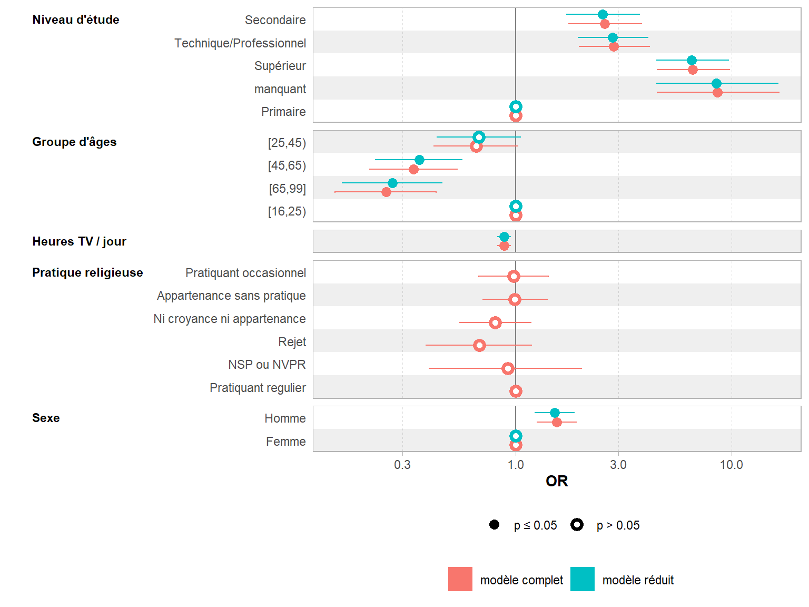
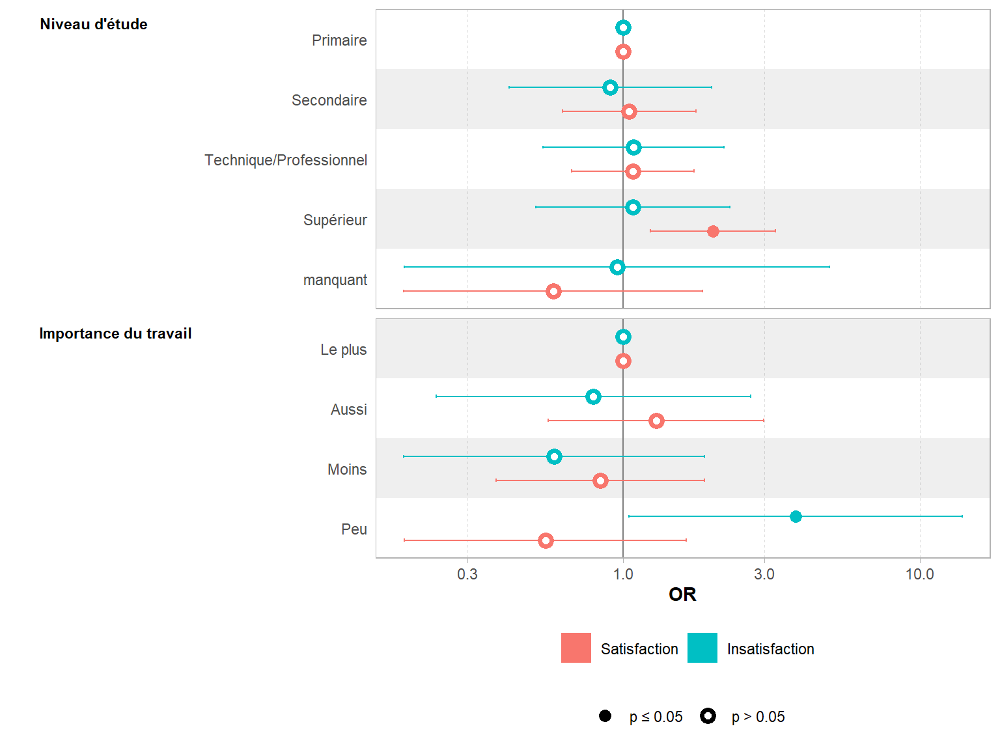
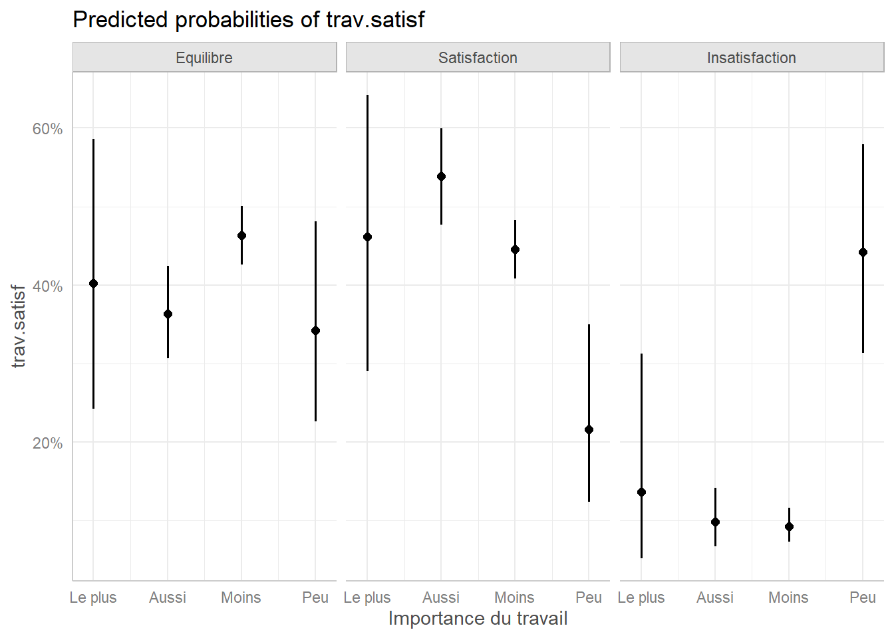

Régression logistique binaire, multinomiale et ordinale
Une version actualisée de ce chapitre est disponible sur guide-R : Régression logistique binaire
La version originale de ce chapitre a été écrite par Joseph Larmarange dans le cadre du support de cours Introduction à l’analyse d’enquêtes avec R.
Ce chapitre est évoqué dans le webin-R #06 (régression logistique partie 1) sur YouTube.
Ce chapitre est évoqué dans le webin-R #07 (régression logistique partie 2) sur YouTube.
Ce chapitre est évoqué dans le webin-R #20 (trajectoires de soins : un exemple de données longitudinales 4 : régression logistique multinomiale & modèles mixtes à classe latente) sur YouTube.
Ce chapitre est évoqué dans le webin-R #21 (trajectoires de soins : un exemple de données longitudinales 5 : modèle à observations répétée, régression logistique ordinale GEE & analyse de survie multi-états) sur YouTube.
La régression logistique est fréquemment utilisée en sciences sociales car elle permet d’effectuer un raisonnement dit toutes choses étant égales par ailleurs. Plus précisément, la régression logistique a pour but d’isoler les effets de chaque variable, c’est-à-dire d’identifier les effets résiduels d’une variable explicative sur une variable d’intérêt, une fois pris en compte les autres variables explicatives introduites dans le modèle. La régression logistique est ainsi prisée en épidémiologie pour identifier les facteurs associés à telle ou telle pathologie.
La régression logistique ordinaire ou régression logistique binaire vise à expliquer une variable d’intérêt binaire (c’est-à-dire de type « oui / non » ou « vrai / faux »). Les variables explicatives qui seront introduites dans le modèle peuvent être quantitatives ou qualitatives.
La régression logistique multinomiale est une extension de la régression logistique aux variables qualitatives à trois modalités ou plus, la régression logistique ordinale aux variables qualitatives à trois modalités ou plus qui sont ordonnées hiérarchiquement.
Préparation des données
Dans ce chapite, nous allons encore une fois utiliser les données de l’enquête Histoire de vie, fournies avec l’extension questionr.
library(questionr)
data(hdv2003)
d <- hdv2003À titre d’exemple, nous allons étudier l’effet de l’âge, du sexe, du niveau d’étude, de la pratique religieuse et du nombre moyen d’heures passées à regarder la télévision par jour sur le fait de pratiquer un sport.
En premier lieu, il importe de vérifier que notre variable d’intérêt (ici sport) est correctement codée. Une possibilité consiste à créer une variable booléenne (vrai / faux) selon que l’individu a pratiqué du sport ou non :
d$sport2 <- FALSE
d$sport2[d$sport == "Oui"] <- TRUEDans le cas présent, cette variable n’a pas de valeur manquante. Mais, le cas échéant, il importe de bien coder les valeurs manquantes en NA, les individus en question étant alors exclu de l’analyse.
Il n’est pas forcément nécessaire de transformer notre variable d’intérêt en variable booléenne. En effet, R accepte sans problème une variable de type facteur. Cependant, l’ordre des valeurs d’un facteur a de l’importance. En effet, R considère toujours la première modalité comme étant la modalité de référence. Dans le cas de la variable d’intérêt, la modalité de référence correspond au fait de ne pas remplir le critère étudié, dans notre exemple au fait de ne pas avoir eu d’activité sportive au cours des douze derniers mois.
Pour connaître l’ordre des modalités d’une variable de type facteur, on peut utiliser la fonction levels ou bien encore tout simplement la fonction freq de l’extension questionr :
levels(d$sport)[1] "Non" "Oui"freq(d$sport)Frequency table
Class: factor (numeric)
Length: 2,000
Levels: 2: Non, Oui
Available: 2,000 (100.0%, NA: 0 = 0.0%)
Unique: 2
Item Count Percent Cum. Count Cum. Percent
--- ------ ------- --------- ------------ --------------
1 Non 1277 63.85% 1277 63.85%
2 Oui 723 36.15% 2000 100.00%Dans notre exemple, la modalité « Non » est déjà la première modalité. Il n’y a donc pas besoin de modifier notre variable. Si ce n’est pas le cas, il faudra modifier la modalité de référence avec la fonction fct_relevel ou la fonction relevel comme nous allons le voir un peu plus loin.
Il est possible d’indiquer un facteur à plus de deux modalités. Dans une telle situation, R considérera que tous les modalités, sauf la modalité de référence, est une réalisation de la variable d’intérêt. Cela serait correct, par exemple, si notre variable sport était codée ainsi : « Non », « Oui, toutes les semaines », « Oui, au moins une fois par mois », « Oui, moins d’une fois par mois ». Cependant, afin d’éviter tout risque d’erreur ou de mauvaise interprétation, il est vivement conseillé de recoder au préalable sa variable d’intérêt en un facteur à deux modalités.
La notion de modalité de référence s’applique également aux variables explicatives qualitatives. En effet, dans un modèle, tous les coefficients sont calculés par rapport à la modalité de référence. Il importe de choisir une modalité de référence qui fasse sens afin de faciliter l’interprétation. Par ailleurs, ce choix peut également dépendre de la manière dont on souhaite présenter les résultats. De manière générale on évitera de choisir comme référence une modalité peu représentée dans l’échantillon ou bien une modalité correspondant à une situation atypique.
Prenons l’exemple de la variable sexe. Souhaite-t-on connaitre l’effet d’être une femme par rapport au fait d’être un homme ou bien l’effet d’être un homme par rapport au fait d’être une femme ? Si l’on opte pour le second, alors notre modalité de référence sera le sexe féminin. Comme est codée cette variable ?
freq(d$sexe)Frequency table
Class: factor (numeric)
Length: 2,000
Levels: 2: Homme, Femme
Available: 2,000 (100.0%, NA: 0 = 0.0%)
Unique: 2
Item Count Percent Cum. Count Cum. Percent
--- ------- ------- --------- ------------ --------------
1 Femme 1101 55.05% 1101 55.05%
2 Homme 899 44.95% 2000 100.00%La modalité « Femme » s’avère ne pas être la première modalité. Nous devons appliquer la fonction fct_relevel ou la fonction relevel :
d$sexe <- relevel(d$sexe, "Femme")
freq(d$sexe)Frequency table
Class: factor (numeric)
Length: 2,000
Levels: 2: Femme, Homme
Available: 2,000 (100.0%, NA: 0 = 0.0%)
Unique: 2
Item Count Percent Cum. Count Cum. Percent
--- ------- ------- --------- ------------ --------------
1 Femme 1101 55.05% 1101 55.05%
2 Homme 899 44.95% 2000 100.00%Données labellisées
Si l’on utilise des données labellisées (voir le chapitre dédié), nos variables catégorielles seront stockées sous la forme d’un vecteur numérique avec des étiquettes. Il sera donc nécessaire de convertir ces variables en facteurs, tout simplement avec la fonction to_factor de l’extension labelled qui pourra utiliser les étiquettes de valeurs comme modalités du facteur.
Les variables age et heures.tv sont des variables quantitatives. Il importe de vérifier qu’elles sont bien enregistrées en tant que variables numériques. En effet, il arrive parfois que dans le fichier source les variables quantitatives soient renseignées sous forme de valeur textuelle et non sous forme numérique.
str(d$age) int [1:2000] 28 23 59 34 71 35 60 47 20 28 ...str(d$heures.tv) num [1:2000] 0 1 0 2 3 2 2.9 1 2 2 ...Nos deux variables sont bien renseignées sous forme numérique.
Cependant, l’effet de l’âge est rarement linéaire. Un exemple trivial est par exemple le fait d’occuper un emploi qui sera moins fréquent aux jeunes âges et aux âges élevés. Dès lors, on pourra transformer la variable age en groupe d’âges avec la fonction cut (voir le chapitre Manipulation de données) :
d$grpage <- cut(d$age, c(16, 25, 45, 65, 99), right = FALSE, include.lowest = TRUE)
freq(d$grpage)Frequency table
Class: factor (numeric)
Length: 2,000
Levels: 4: [16,25), [25,45), [45,65), [65,99]...
Available: 2,000 (100.0%, NA: 0 = 0.0%)
Unique: 4
Item Count Percent Cum. Count Cum. Percent
--- --------- ------- --------- ------------ --------------
1 [45,65) 745 37.25% 745 37.25%
2 [25,45) 706 35.30% 1451 72.55%
3 [65,99] 380 19.00% 1831 91.55%
4 [16,25) 169 8.45% 2000 100.00%Jetons maintenant un oeil à la variable nivetud :
freq(d$nivetud)Frequency table
Class: factor (numeric)
Length: 2,000
Levels: 8: N'a jamais fait d'etudes, A arrete ses etudes, avant la derniere an...
Available: 1,888 (94.4%, NA: 112 = 5.6%)
Unique: 8
Item Count Percent Cum. Count Cum. Percent
--- ----------------------------------------------------------------- ------- --------- ------------ --------------
1 Enseignement technique ou professionnel court 463 24.52% 463 24.52%
2 Enseignement superieur y compris technique superieur 441 23.36% 904 47.88%
3 Derniere annee d'etudes primaires 341 18.06% 1245 65.94%
4 1er cycle 204 10.81% 1449 76.75%
5 2eme cycle 183 9.69% 1632 86.44%
6 Enseignement technique ou professionnel long 131 6.94% 1763 93.38%
7 A arrete ses etudes, avant la derniere annee d'etudes primaires 86 4.56% 1849 97.93%
8 N'a jamais fait d'etudes 39 2.07% 1888 100.00%En premier lieu, cette variable est détaillée en pas moins de huit modalités dont certaines sont peu représentées (seulement 39 individus soit 2 % n’ont jamais fait d’études par exemple). Afin d’améliorier notre modèle logistique, il peut être pertinent de regrouper certaines modalités (voir le chapitre Manipulation de données) :
d$etud <- d$nivetud
levels(d$etud) <- c(
"Primaire", "Primaire", "Primaire",
"Secondaire", "Secondaire", "Technique/Professionnel",
"Technique/Professionnel", "Supérieur"
)
freq(d$etud)Frequency table
Class: factor (numeric)
Length: 2,000
Levels: 4: Primaire, Secondaire, Technique/Professionnel, Supérieur...
Available: 1,888 (94.4%, NA: 112 = 5.6%)
Unique: 4
Item Count Percent Cum. Count Cum. Percent
--- ------------------------- ------- --------- ------------ --------------
1 Technique/Professionnel 594 31.46% 594 31.46%
2 Primaire 466 24.68% 1060 56.14%
3 Supérieur 441 23.36% 1501 79.50%
4 Secondaire 387 20.50% 1888 100.00%Notre variable comporte également 112 individus avec une valeur manquante. Si nous conservons cette valeur manquante, ces 112 individus seront, par défaut, exclus de l’analyse. Ces valeurs manquantes n’étant pas négligeable (5,6 %), nous pouvons également faire le choix de considérer ces valeurs manquantes comme une modalité supplémentaire. Auquel cas, nous utiliserons la fonction fct_explicit_na fournie par questionr1 :
levels(d$etud)[1] "Primaire" "Secondaire"
[3] "Technique/Professionnel" "Supérieur" d$etud <- forcats::fct_explicit_na(d$etud, "manquant")
levels(d$etud)[1] "Primaire" "Secondaire"
[3] "Technique/Professionnel" "Supérieur"
[5] "manquant" Régression logistique binaire
La fonction glm (pour generalized linear models soit modèle linéaire généralisé en français) permet de calculer une grande variété de modèles statistiques. La régression logistique ordinaire correspond au modèle logit de la famille des modèles binomiaux, ce que l’on indique à glm avec l’argument family=binomial(logit).
Le modèle proprement dit sera renseigné sous la forme d’une formule (que nous avons déjà rencontrée dans le chapitre sur la statistique bivariée et présentée plus en détails dans un chapitre dédié). On indiquera d’abord la variable d’intérêt, suivie du signe ~ (que l’on obtient en appuyant sur les touches Alt Gr et 3 sur un clavier de type PC) puis de la liste des variables explicatives séparées par un signe +. Enfin, l’argument data permettra d’indiquer notre tableau de données.
reg <- glm(sport ~ sexe + grpage + etud + relig + heures.tv, data = d, family = binomial(logit))
reg
Call: glm(formula = sport ~ sexe + grpage + etud + relig + heures.tv,
family = binomial(logit), data = d)
Coefficients:
(Intercept)
-0.7984
sexeHomme
0.4397
grpage[25,45)
-0.4204
grpage[45,65)
-1.0854
grpage[65,99]
-1.3814
etudSecondaire
0.9506
etudTechnique/Professionnel
1.0493
etudSupérieur
1.8917
etudmanquant
2.1504
religPratiquant occasionnel
-0.0219
religAppartenance sans pratique
-0.0067
religNi croyance ni appartenance
-0.2154
religRejet
-0.3835
religNSP ou NVPR
-0.0838
heures.tv
-0.1209
Degrees of Freedom: 1994 Total (i.e. Null); 1980 Residual
(5 observations effacées parce que manquantes)
Null Deviance: 2610
Residual Deviance: 2210 AIC: 2240Il est possible de spécifier des modèles plus complexes. Par exemple, x:y permet d’indiquer l’interaction entre les variables x et y. x * y sera équivalent à x + y + x:y. Pour aller plus loin, voir http://ww2.coastal.edu/kingw/statistics/R-tutorials/formulae.html.
Une présentation plus complète des résultats est obtenue avec la méthode summary :
summary(reg)
Call:
glm(formula = sport ~ sexe + grpage + etud + relig + heures.tv,
family = binomial(logit), data = d)
Deviance Residuals:
Min 1Q Median 3Q Max
-1.878 -0.886 -0.481 1.003 2.422
Coefficients:
Estimate Std. Error
(Intercept) -0.7984 0.3239
sexeHomme 0.4397 0.1061
grpage[25,45) -0.4204 0.2281
grpage[45,65) -1.0854 0.2377
grpage[65,99] -1.3814 0.2738
etudSecondaire 0.9506 0.1974
etudTechnique/Professionnel 1.0493 0.1898
etudSupérieur 1.8917 0.1952
etudmanquant 2.1504 0.3302
religPratiquant occasionnel -0.0219 0.1892
religAppartenance sans pratique -0.0067 0.1747
religNi croyance ni appartenance -0.2154 0.1931
religRejet -0.3835 0.2859
religNSP ou NVPR -0.0838 0.4110
heures.tv -0.1209 0.0336
z value Pr(>|z|)
(Intercept) -2.46 0.01371 *
sexeHomme 4.15 3.4e-05 ***
grpage[25,45) -1.84 0.06524 .
grpage[45,65) -4.57 5.0e-06 ***
grpage[65,99] -5.05 4.5e-07 ***
etudSecondaire 4.81 1.5e-06 ***
etudTechnique/Professionnel 5.53 3.2e-08 ***
etudSupérieur 9.69 < 2e-16 ***
etudmanquant 6.51 7.4e-11 ***
religPratiquant occasionnel -0.12 0.90783
religAppartenance sans pratique -0.04 0.96943
religNi croyance ni appartenance -1.12 0.26462
religRejet -1.34 0.17976
religNSP ou NVPR -0.20 0.83847
heures.tv -3.60 0.00032 ***
---
Signif. codes:
0 '***' 0.001 '**' 0.01 '*' 0.05 '.' 0.1 ' ' 1
(Dispersion parameter for binomial family taken to be 1)
Null deviance: 2609.2 on 1994 degrees of freedom
Residual deviance: 2206.2 on 1980 degrees of freedom
(5 observations effacées parce que manquantes)
AIC: 2236
Number of Fisher Scoring iterations: 4Coefficients du modèle
Dans le cadre d’un modèle logistique, généralement on ne présente pas les coefficients du modèle mais leur valeur exponentielle, cette dernière correspondant en effet à des odds ratio, également appelés rapports des cotes. L’odds ratio diffère du risque relatif. Cependent son interprétation est similaire. Un odds ratio de 1 signifie l’absence d’effet. Un odds ratio largement supérieur à 1 correspond à une augmentation du phénomène étudié et un odds ratio largement inféieur à 1 correspond à une diminution du phénomène étudié2.
La fonction coef permet d’obtenir les coefficients d’un modèle, confint leurs intervalles de confiance et exp de calculer l’exponentiel. Les odds ratio et leurs intervalles de confiance s’obtiennent ainsi :
exp(coef(reg)) (Intercept)
0.4501
sexeHomme
1.5522
grpage[25,45)
0.6568
grpage[45,65)
0.3378
grpage[65,99]
0.2512
etudSecondaire
2.5872
etudTechnique/Professionnel
2.8555
etudSupérieur
6.6304
etudmanquant
8.5885
religPratiquant occasionnel
0.9783
religAppartenance sans pratique
0.9933
religNi croyance ni appartenance
0.8062
religRejet
0.6814
religNSP ou NVPR
0.9196
heures.tv
0.8861 exp(confint(reg))Attente de la réalisation du profilage... 2.5 % 97.5 %
(Intercept) 0.2377 0.8473
sexeHomme 1.2614 1.9120
grpage[25,45) 0.4194 1.0275
grpage[45,65) 0.2115 0.5381
grpage[65,99] 0.1464 0.4288
etudSecondaire 1.7653 3.8328
etudTechnique/Professionnel 1.9805 4.1729
etudSupérieur 4.5518 9.7951
etudmanquant 4.5348 16.5885
religPratiquant occasionnel 0.6759 1.4199
religAppartenance sans pratique 0.7063 1.4020
religNi croyance ni appartenance 0.5524 1.1782
religRejet 0.3869 1.1890
religNSP ou NVPR 0.3997 2.0216
heures.tv 0.8290 0.9458On pourra faciliter la lecture en combinant les deux :
exp(cbind(coef(reg), confint(reg)))Attente de la réalisation du profilage... 2.5 % 97.5 %
(Intercept) 0.4501 0.2377 0.8473
sexeHomme 1.5522 1.2614 1.9120
grpage[25,45) 0.6568 0.4194 1.0275
grpage[45,65) 0.3378 0.2115 0.5381
grpage[65,99] 0.2512 0.1464 0.4288
etudSecondaire 2.5872 1.7653 3.8328
etudTechnique/Professionnel 2.8555 1.9805 4.1729
etudSupérieur 6.6304 4.5518 9.7951
etudmanquant 8.5885 4.5348 16.5885
religPratiquant occasionnel 0.9783 0.6759 1.4199
religAppartenance sans pratique 0.9933 0.7063 1.4020
religNi croyance ni appartenance 0.8062 0.5524 1.1782
religRejet 0.6814 0.3869 1.1890
religNSP ou NVPR 0.9196 0.3997 2.0216
heures.tv 0.8861 0.8290 0.9458Pour savoir si un odds ratio diffère significativement de 1 (ce qui est identique au fait que le coefficient soit différent de 0), on pourra se référer à la colonne Pr(>|z|) obtenue avec summary.
Si vous disposez de l’extension questionr, la fonction odds.ratio permet de calculer directement les odds ratio, leur intervalles de confiance et les p-value :
library(questionr)
odds.ratio(reg)Attente de la réalisation du profilage... OR 2.5 % 97.5 % p
(Intercept) 0.450 0.238 0.85 0.01371
sexeHomme 1.552 1.261 1.91 3.4e-05
grpage[25,45) 0.657 0.419 1.03 0.06524
grpage[45,65) 0.338 0.212 0.54 5.0e-06
grpage[65,99] 0.251 0.146 0.43 4.5e-07
etudSecondaire 2.587 1.765 3.83 1.5e-06
etudTechnique/Professionnel 2.856 1.980 4.17 3.2e-08
etudSupérieur 6.630 4.552 9.80 < 2e-16
etudmanquant 8.589 4.535 16.59 7.4e-11
religPratiquant occasionnel 0.978 0.676 1.42 0.90783
religAppartenance sans pratique 0.993 0.706 1.40 0.96943
religNi croyance ni appartenance 0.806 0.552 1.18 0.26462
religRejet 0.681 0.387 1.19 0.17976
religNSP ou NVPR 0.920 0.400 2.02 0.83847
heures.tv 0.886 0.829 0.95 0.00032
(Intercept) *
sexeHomme ***
grpage[25,45) .
grpage[45,65) ***
grpage[65,99] ***
etudSecondaire ***
etudTechnique/Professionnel ***
etudSupérieur ***
etudmanquant ***
religPratiquant occasionnel
religAppartenance sans pratique
religNi croyance ni appartenance
religRejet
religNSP ou NVPR
heures.tv ***
---
Signif. codes:
0 '***' 0.001 '**' 0.01 '*' 0.05 '.' 0.1 ' ' 1La fonction tidy de l’extension broom pour récupérer les coefficients du modèle sous la forme d’un tableau de données. On précisera conf.int = TRUE pour obtenir les intervalles de confiance et exponentiate = TRUE pour avoir les odds ratio plutôt que les coefficients bruts.
library(broom)
tidy(reg, conf.int = TRUE, exponentiate = TRUE)# A tibble: 15 × 7
term estim…¹ std.e…² stati…³ p.value conf.…⁴ conf.…⁵
<chr> <dbl> <dbl> <dbl> <dbl> <dbl> <dbl>
1 (Interc… 0.450 0.324 -2.46 1.37e- 2 0.238 0.847
2 sexeHom… 1.55 0.106 4.15 3.39e- 5 1.26 1.91
3 grpage[… 0.657 0.228 -1.84 6.52e- 2 0.419 1.03
4 grpage[… 0.338 0.238 -4.57 4.97e- 6 0.212 0.538
5 grpage[… 0.251 0.274 -5.05 4.53e- 7 0.146 0.429
6 etudSec… 2.59 0.197 4.81 1.48e- 6 1.77 3.83
7 etudTec… 2.86 0.190 5.53 3.24e- 8 1.98 4.17
8 etudSup… 6.63 0.195 9.69 3.32e-22 4.55 9.80
9 etudman… 8.59 0.330 6.51 7.42e-11 4.53 16.6
10 religPr… 0.978 0.189 -0.116 9.08e- 1 0.676 1.42
11 religAp… 0.993 0.175 -0.0383 9.69e- 1 0.706 1.40
12 religNi… 0.806 0.193 -1.12 2.65e- 1 0.552 1.18
13 religRe… 0.681 0.286 -1.34 1.80e- 1 0.387 1.19
14 religNS… 0.920 0.411 -0.204 8.38e- 1 0.400 2.02
15 heures.… 0.886 0.0336 -3.60 3.19e- 4 0.829 0.946
# … with abbreviated variable names ¹estimate, ²std.error,
# ³statistic, ⁴conf.low, ⁵conf.highL’extension broom.helpers fournit une fonction tidi_plus_plus qui permet d’améliorer le tableau renvoyé par tidy en y identifiant les variables utilisés, ajoutant les modalités de référence et en proposant des étiquettes plus explicites.
library(broom.helpers)
tidy_plus_plus(reg, exponentiate = TRUE)# A tibble: 18 × 18
term varia…¹ var_l…² var_c…³ var_t…⁴ var_n…⁵ contr…⁶
<chr> <chr> <chr> <chr> <chr> <int> <chr>
1 sexeFemme sexe sexe factor dichot… 2 contr.…
2 sexeHomme sexe sexe factor dichot… 2 contr.…
3 grpage[1… grpage grpage factor catego… 4 contr.…
4 grpage[2… grpage grpage factor catego… 4 contr.…
5 grpage[4… grpage grpage factor catego… 4 contr.…
6 grpage[6… grpage grpage factor catego… 4 contr.…
7 etudPrim… etud etud factor catego… 5 contr.…
8 etudSeco… etud etud factor catego… 5 contr.…
9 etudTech… etud etud factor catego… 5 contr.…
10 etudSupé… etud etud factor catego… 5 contr.…
11 etudmanq… etud etud factor catego… 5 contr.…
12 religPra… relig relig factor catego… 6 contr.…
13 religPra… relig relig factor catego… 6 contr.…
14 religApp… relig relig factor catego… 6 contr.…
15 religNi … relig relig factor catego… 6 contr.…
16 religRej… relig relig factor catego… 6 contr.…
17 religNSP… relig relig factor catego… 6 contr.…
18 heures.tv heures… heures… numeric contin… NA <NA>
# … with 11 more variables: contrasts_type <chr>,
# reference_row <lgl>, label <chr>, n_obs <dbl>,
# n_event <dbl>, estimate <dbl>, std.error <dbl>,
# statistic <dbl>, p.value <dbl>, conf.low <dbl>,
# conf.high <dbl>, and abbreviated variable names
# ¹variable, ²var_label, ³var_class, ⁴var_type,
# ⁵var_nlevels, ⁶contrastsSi l’on souhaite avoir des noms de variables plus explicites, il faut ajouter des étiquettes des variables avec var_label de l’extension labelled (voir le chapitre sur les vecteurs labellisés).
Par contre, cette étape doit avoir eu lieu avant le calcul de la régression linéaire.
library(labelled)
var_label(d$sport) <- "Pratique du sport ?"
var_label(d$sexe) <- "Sexe"
var_label(d$grpage) <- "Groupe d'âges"
var_label(d$etud) <- "Niveau d'étude"
var_label(d$relig) <- "Pratique religieuse"
var_label(d$heures.tv) <- "Heures de télévision / jour"
var_label(d$trav.imp) <- "Importance du travail"
reg <- glm(sport ~ sexe + grpage + etud + relig + heures.tv, data = d, family = binomial(logit))tidy_plus_plus(reg, exponentiate = TRUE)# A tibble: 18 × 18
term varia…¹ var_l…² var_c…³ var_t…⁴ var_n…⁵ contr…⁶
<chr> <chr> <chr> <chr> <chr> <int> <chr>
1 sexeFemme sexe Sexe factor dichot… 2 contr.…
2 sexeHomme sexe Sexe factor dichot… 2 contr.…
3 grpage[1… grpage Groupe… factor catego… 4 contr.…
4 grpage[2… grpage Groupe… factor catego… 4 contr.…
5 grpage[4… grpage Groupe… factor catego… 4 contr.…
6 grpage[6… grpage Groupe… factor catego… 4 contr.…
7 etudPrim… etud Niveau… factor catego… 5 contr.…
8 etudSeco… etud Niveau… factor catego… 5 contr.…
9 etudTech… etud Niveau… factor catego… 5 contr.…
10 etudSupé… etud Niveau… factor catego… 5 contr.…
11 etudmanq… etud Niveau… factor catego… 5 contr.…
12 religPra… relig Pratiq… factor catego… 6 contr.…
13 religPra… relig Pratiq… factor catego… 6 contr.…
14 religApp… relig Pratiq… factor catego… 6 contr.…
15 religNi … relig Pratiq… factor catego… 6 contr.…
16 religRej… relig Pratiq… factor catego… 6 contr.…
17 religNSP… relig Pratiq… factor catego… 6 contr.…
18 heures.tv heures… Heures… numeric contin… NA <NA>
# … with 11 more variables: contrasts_type <chr>,
# reference_row <lgl>, label <chr>, n_obs <dbl>,
# n_event <dbl>, estimate <dbl>, std.error <dbl>,
# statistic <dbl>, p.value <dbl>, conf.low <dbl>,
# conf.high <dbl>, and abbreviated variable names
# ¹variable, ²var_label, ³var_class, ⁴var_type,
# ⁵var_nlevels, ⁶contrastsLa fonction tbl_regression de l’extension gtsummary, qui a recours en interne à broom.helpers, permet d’obtenir un tableau plus propre. Comme nous souhaitons afficher les odds ratios plutôt que les coefficients du modèle, on indiquera exponentiate = TRUE.
library(gtsummary)
tbl_regression(reg, exponentiate = TRUE)| Caractéristique | OR1 | 95% IC1 | p-valeur |
|---|---|---|---|
| Sexe | |||
| Femme | — | — | |
| Homme | 1,55 | 1,26 – 1,91 | <0,001 |
| Groupe d'âges | |||
| [16,25) | — | — | |
| [25,45) | 0,66 | 0,42 – 1,03 | 0,065 |
| [45,65) | 0,34 | 0,21 – 0,54 | <0,001 |
| [65,99] | 0,25 | 0,15 – 0,43 | <0,001 |
| Niveau d'étude | |||
| Primaire | — | — | |
| Secondaire | 2,59 | 1,77 – 3,83 | <0,001 |
| Technique/Professionnel | 2,86 | 1,98 – 4,17 | <0,001 |
| Supérieur | 6,63 | 4,55 – 9,80 | <0,001 |
| manquant | 8,59 | 4,53 – 16,6 | <0,001 |
| Pratique religieuse | |||
| Pratiquant regulier | — | — | |
| Pratiquant occasionnel | 0,98 | 0,68 – 1,42 | >0,9 |
| Appartenance sans pratique | 0,99 | 0,71 – 1,40 | >0,9 |
| Ni croyance ni appartenance | 0,81 | 0,55 – 1,18 | 0,3 |
| Rejet | 0,68 | 0,39 – 1,19 | 0,2 |
| NSP ou NVPR | 0,92 | 0,40 – 2,02 | 0,8 |
| Heures de télévision / jour | 0,89 | 0,83 – 0,95 | <0,001 |
| 1 OR = rapport de cotes, IC = intervalle de confiance | |||
On pourra se référer à la vignette dédiée (en anglais) pour découvrir les différentes options de tbl_regression.
Représentation graphique du modèle
Il est possible de représenter graphiquement les différents odds ratios avec la fonction ggcoef_model de GGally.
library(GGally)
ggcoef_model(reg, exponentiate = TRUE)L’extension forestmodel propose de son côté une fonction forest_model qui, à partir d’un modèle, propose une représentation visuelle et tabulaire des coefficients.
library(forestmodel)
forest_model(reg)
A la différence de ggcoef_model qui fonctionne avec la plupart des types de modèles (dont les modèles à effets mixtes ou ceux réalisés avec un plan d’échantillonnage complexe), forest_model ne fonctionne qu’avec les modèles les plus courants.
Représentation graphique des effets
Une version actualisée de cette section est disponible sur guide-R : Prédictions marginales, contrastes marginaux & effets marginaux
L’extension effects propose une représentation graphique résumant les effets de chaque variable du modèle. Pour cela, il suffit d’appliquer la méthode plot au résultat de la fonction allEffects. Nous obtenons alors la figure ci-dessous.
library(effects)
plot(allEffects(reg))Nous pouvons alternativement avoir recours à l’extension ggeffects3 et sa fonction ggeffect qui permettent de récupérer les résultats de effects dans un format utilisable avec ggplot2.
Ainsi, la fonction ggeffect, quand on lui précise un terme spécifique, produit un tableau de données avec les effets marginaux pour cette variable.
library(ggeffects)
ggeffect(reg, "sexe")# Predicted probabilities of Pratique du sport ?
sexe | Predicted | 95% CI
--------------------------------
Femme | 0.28 | [0.26, 0.32]
Homme | 0.38 | [0.35, 0.42]En combinant ce résultat avec plot, on obtient un graphique ggplot2 de l’effet en question.
plot(ggeffect(reg, "sexe"))
Si l’on ne précise pas de terme, ggeffect(reg) calcule les effets pour chaque variable du modèle et plot(ggeffect(reg)) renvoie une liste de graphiques. Il faut donc utiliser la fonction plot_grid de cowplot pour combiner ces graphiques en un seul (voir le chapitre dédié).
library(ggeffects)
cowplot::plot_grid(plotlist = plot(ggeffect(reg)))On pourra noter la prise en compte par ggeffect des étiquettes de variables définies plus haut.
Matrice de confusion
Une manière de tester la qualité d’un modèle est le calcul d’une matrice de confusion, c’est-à-dire le tableau croisé des valeurs observées et celles des valeurs prédites en appliquant le modèle aux données d’origine.
La méthode predict avec l’argument type="response" permet d’appliquer notre modèle logistique à un tableau de données et renvoie pour chaque individu la probabilité qu’il ait vécu le phénomène étudié.
sport.pred <- predict(reg, type = "response", newdata = d)
head(sport.pred) 1 2 3 4 5 6
0.61241 0.73415 0.15983 0.70350 0.07294 0.34824 Or notre variable étudiée est de type binaire. Nous devons donc transformer nos probabilités prédites en une variable du type « oui / non ». Usuellement, les probabilités prédites seront réunies en deux groupes selon qu’elles soient supérieures ou inférieures à la moitié. La matrice de confusion est alors égale à :
table(sport.pred > 0.5, d$sport)
Non Oui
FALSE 1076 384
TRUE 199 336Nous avons donc 583 (384+199) prédictions incorrectes sur un total de 1993, soit un taux de mauvais classement de 29,3 %.
Identifier les variables ayant un effet significatif
Les p-values associées aux odds ratios nous indique si un odd ratio est significativement différent de 1, par rapport à la modalité de référence. Mais cela n’indique pas si globalement une variable a un effet significatif sur le modèle. Pour tester l’effet global sur un modèle, on peut avoir recours à la fonction drop1. Cette dernière va tour à tour supprimer chaque variable du modèle et réaliser une analyse de variance (ANOVA, voir fonction anova) pour voir si la variance change significativement.
drop1(reg, test = "Chisq")Single term deletions
Model:
sport ~ sexe + grpage + etud + relig + heures.tv
Df Deviance AIC LRT Pr(>Chi)
<none> 2206 2236
sexe 1 2223 2251 17.3 3.2e-05 ***
grpage 3 2259 2283 52.8 2.0e-11 ***
etud 4 2330 2352 123.8 < 2e-16 ***
relig 5 2210 2230 4.2 0.51654
heures.tv 1 2220 2248 13.4 0.00025 ***
---
Signif. codes:
0 '***' 0.001 '**' 0.01 '*' 0.05 '.' 0.1 ' ' 1Ainsi, dans le cas présent, la suppression de la variable relig ne modifie significativement pas le modèle, indiquant l’absence d’effet de cette variable.
Une fonction plus générique (i.e. fonctionnant avec une plus grande variété de modèles) est la fonction Anova de l’extension car.
library(car)
Anova(reg)Analysis of Deviance Table (Type II tests)
Response: sport
LR Chisq Df Pr(>Chisq)
sexe 17.3 1 3.2e-05 ***
grpage 52.8 3 2.0e-11 ***
etud 123.8 4 < 2e-16 ***
relig 4.2 5 0.51654
heures.tv 13.4 1 0.00025 ***
---
Signif. codes:
0 '***' 0.001 '**' 0.01 '*' 0.05 '.' 0.1 ' ' 1Si l’on a recours à tbl_regression, on peut facilement ajouter les p-valeurs globales avec add_global_p.
reg %>%
tbl_regression(exponentiate = TRUE) %>%
add_global_p(type = "II")| Caractéristique | OR1 | 95% IC1 | p-valeur |
|---|---|---|---|
| Sexe | <0,001 | ||
| Femme | — | — | |
| Homme | 1,55 | 1,26 – 1,91 | |
| Groupe d'âges | <0,001 | ||
| [16,25) | — | — | |
| [25,45) | 0,66 | 0,42 – 1,03 | |
| [45,65) | 0,34 | 0,21 – 0,54 | |
| [65,99] | 0,25 | 0,15 – 0,43 | |
| Niveau d'étude | <0,001 | ||
| Primaire | — | — | |
| Secondaire | 2,59 | 1,77 – 3,83 | |
| Technique/Professionnel | 2,86 | 1,98 – 4,17 | |
| Supérieur | 6,63 | 4,55 – 9,80 | |
| manquant | 8,59 | 4,53 – 16,6 | |
| Pratique religieuse | 0,5 | ||
| Pratiquant regulier | — | — | |
| Pratiquant occasionnel | 0,98 | 0,68 – 1,42 | |
| Appartenance sans pratique | 0,99 | 0,71 – 1,40 | |
| Ni croyance ni appartenance | 0,81 | 0,55 – 1,18 | |
| Rejet | 0,68 | 0,39 – 1,19 | |
| NSP ou NVPR | 0,92 | 0,40 – 2,02 | |
| Heures de télévision / jour | 0,89 | 0,83 – 0,95 | <0,001 |
| 1 OR = rapport de cotes, IC = intervalle de confiance | |||
Concernant le test réalisé dans le cadre d’une Anova, il existe trois tests différents que l’on présente comme le type 1, le type 2 et le type 3 (ou I, II et III). Pour une explication sur ces différents types, on pourra se référer (en anglais) à https://mcfromnz.wordpress.com/2011/03/02/anova-type-iiiiii-ss-explained/ ou encore http://md.psych.bio.uni-goettingen.de/mv/unit/lm_cat/lm_cat_unbal_ss_explained.html.
Le type I n’est pas recommandé dans le cas présent car il dépend de l’ordre dans lequel les différentes variables sont testées.
Lorsqu’il n’y a pas d’interaction dans un modèle (voir le chapitre sur les interactions), le type II serait à privilégier car plus puissant.
En présence d’interactions, il est conseillé d’avoir plutôt recours au type III. Cependant, en toute rigueur, pour utiliser le type III, il faut que les variables catégorielles soient codées en utilisant un contrastes dont la somme est nulle (un contrast de type somme ou polynomial). Or, par défaut, les variables catégorielles sont codées avec un contraste de type traitement
(pour une explication sur les contrastes dans les modèles, voir en anglais cette page ou celle-ci).
Par défaut, Anova utilise le type II et add_global_p le type III. Dans les deux cas, il est possible de préciser le type de test avec type = "II" ou type = "III".
Dans le cas de notre exemple, un modèle simple sans interaction, le type de test ne change pas les résultats.
Anova(reg, type = "II")Analysis of Deviance Table (Type II tests)
Response: sport
LR Chisq Df Pr(>Chisq)
sexe 17.3 1 3.2e-05 ***
grpage 52.8 3 2.0e-11 ***
etud 123.8 4 < 2e-16 ***
relig 4.2 5 0.51654
heures.tv 13.4 1 0.00025 ***
---
Signif. codes:
0 '***' 0.001 '**' 0.01 '*' 0.05 '.' 0.1 ' ' 1Anova(reg, type = "III")Analysis of Deviance Table (Type III tests)
Response: sport
LR Chisq Df Pr(>Chisq)
sexe 17.3 1 3.2e-05 ***
grpage 52.8 3 2.0e-11 ***
etud 123.8 4 < 2e-16 ***
relig 4.2 5 0.51654
heures.tv 13.4 1 0.00025 ***
---
Signif. codes:
0 '***' 0.001 '**' 0.01 '*' 0.05 '.' 0.1 ' ' 1Sélection de modèles
Il est toujours tentant lorsque l’on recherche les facteurs associés à un phénomène d’inclure un nombre important de variables explicatives potentielles dans un mmodèle logistique. Cependant, un tel modèle n’est pas forcément le plus efficace et certaines variables n’auront probablement pas d’effet significatif sur la variable d’intérêt.
Pour une présentation didactique du cadre théorique de la sélection de modèle, vous pouvez consulter en ligne le cours de L. Rouvière sur la sélection/validation de modèles.
La technique de sélection descendante pas à pas est une approche visant à améliorer son modèle explicatif4. On réalise un premier modèle avec toutes les variables spécifiées, puis on regarde s’il est possible d’améliorer le modèle en supprimant une des variables du modèle. Si plusieurs variables permettent d’améliorer le modèle, on supprimera la variable dont la suppression améliorera le plus le modèle. Puis on recommence le même procédé pour voir si la suppression d’une seconde variable peut encore améliorer le modèle et ainsi de suite. Lorsque le modèle ne peut plus être améliorer par la suppresion d’une variable, on s’arrête.
Il faut également définir un critère pour déterminer la qualité d’un modèle. L’un des plus utilisés est le Akaike Information Criterion ou AIC. Plus l’AIC sera faible, meilleure sera le modèle.
La fonction step permet justement de sélectionner le meilleur modèle par une procédure pas à pas descendante basée sur la minimisation de l’AIC. La fonction affiche à l’écran les différentes étapes de la sélection et renvoie le modèle final.
reg2 <- step(reg)Start: AIC=2236
sport ~ sexe + grpage + etud + relig + heures.tv
Df Deviance AIC
- relig 5 2210 2230
<none> 2206 2236
- heures.tv 1 2220 2248
- sexe 1 2223 2251
- grpage 3 2259 2283
- etud 4 2330 2352
Step: AIC=2230
sport ~ sexe + grpage + etud + heures.tv
Df Deviance AIC
<none> 2210 2230
- heures.tv 1 2224 2242
- sexe 1 2226 2244
- grpage 3 2261 2275
- etud 4 2334 2346Le modèle initial a un AIC de 2235,9. À la première étape, il apparait que la suppression de la variable religion permet diminuer l’AIC à 2230,2. Lors de la seconde étape, toute suppression d’une autre variable ferait augmenter l’AIC. La procédure s’arrête donc.
Pour obtenir directement l’AIC d’un modèle donné, on peut utiliser la fonction AIC.
AIC(reg)[1] 2236AIC(reg2)[1] 2230On peut effectuer une analyse de variance ou ANOVA pour comparer les deux modèles avec la fonction anova.
anova(reg, reg2, test = "Chisq")Analysis of Deviance Table
Model 1: sport ~ sexe + grpage + etud + relig + heures.tv
Model 2: sport ~ sexe + grpage + etud + heures.tv
Resid. Df Resid. Dev Df Deviance Pr(>Chi)
1 1980 2206
2 1985 2210 -5 -4.23 0.52Il n’y a pas de différences significatives entre nos deux modèles. Autrement dit, notre second modèle explique tout autant de variance que notre premier modèle, tout en étant plus parcimonieux.
Une alternative à la fonction step est la fonction stepAIC de l’extension MASS qui fonctionne de la même manière. Si cela ne change rien aux régressions logistiques classiques, il arrive que pour certains types de modèle la méthode step ne soit pas disponible, mais que stepAIC puisse être utilisée à la place.
library(MASS)
reg2bis <- stepAIC(reg)Start: AIC=2236
sport ~ sexe + grpage + etud + relig + heures.tv
Df Deviance AIC
- relig 5 2210 2230
<none> 2206 2236
- heures.tv 1 2220 2248
- sexe 1 2223 2251
- grpage 3 2259 2283
- etud 4 2330 2352
Step: AIC=2230
sport ~ sexe + grpage + etud + heures.tv
Df Deviance AIC
<none> 2210 2230
- heures.tv 1 2224 2242
- sexe 1 2226 2244
- grpage 3 2261 2275
- etud 4 2334 2346Un critère similaire à l’AIC est le critère BIC (Bayesian Information Criterion) appelé aussi SBC (Schwarz information criterion). Il s’obtient avec step an ajoutant l’argument k = log(n) où n est le nombre d’observations inclues dans le modèle que l’on peut obtenir avec nrow(model.matrix(reg)) (pour tenir compte des éventuelles observations manquantes retirées des données pour le calcul du modèle).
reg2_bic <- step(reg, k = log(nrow(model.matrix(reg))))Start: AIC=2320
sport ~ sexe + grpage + etud + relig + heures.tv
Df Deviance AIC
- relig 5 2210 2286
<none> 2206 2320
- heures.tv 1 2220 2326
- sexe 1 2223 2330
- grpage 3 2259 2350
- etud 4 2330 2414
Step: AIC=2286
sport ~ sexe + grpage + etud + heures.tv
Df Deviance AIC
<none> 2210 2286
- heures.tv 1 2224 2292
- sexe 1 2226 2295
- grpage 3 2261 2314
- etud 4 2334 2380On peut facilement comparer visuellement deux modèles avec ggcoef_compare de GGally.
library(GGally)
ggcoef_compare(
list("modèle complet" = reg, "modèle réduit" = reg2),
exponentiate = TRUE,
variable_labels = c(heures.tv = "Heures TV / jour")
)
ggcoef_compare(
list("modèle complet" = reg, "modèle réduit" = reg2),
type = "faceted",
exponentiate = TRUE,
variable_labels = c(heures.tv = "Heures TV / jour")
)Tableaux all-in-one
gtsummary
Nous avons déjà vu précédemment la fonction tbl_regression de l’extension gtsummary. Une vignette dédiée de l’extension explicite les possibilités de personnalisation des résultats. Par exemple add_global_p permet d’ajouter des p-valeurs globales pour chaque variable.
library(gtsummary)
theme_gtsummary_language("fr", decimal.mark = ",", big.mark = " ")Setting theme `language: fr`tbl_regression(reg, exponentiate = TRUE) %>%
add_global_p(keep = TRUE)| Caractéristique | OR1 | 95% IC1 | p-valeur |
|---|---|---|---|
| Sexe | <0,001 | ||
| Femme | — | — | |
| Homme | 1,55 | 1,26 – 1,91 | <0,001 |
| Groupe d'âges | <0,001 | ||
| [16,25) | — | — | |
| [25,45) | 0,66 | 0,42 – 1,03 | 0,065 |
| [45,65) | 0,34 | 0,21 – 0,54 | <0,001 |
| [65,99] | 0,25 | 0,15 – 0,43 | <0,001 |
| Niveau d'étude | <0,001 | ||
| Primaire | — | — | |
| Secondaire | 2,59 | 1,77 – 3,83 | <0,001 |
| Technique/Professionnel | 2,86 | 1,98 – 4,17 | <0,001 |
| Supérieur | 6,63 | 4,55 – 9,80 | <0,001 |
| manquant | 8,59 | 4,53 – 16,6 | <0,001 |
| Pratique religieuse | 0,5 | ||
| Pratiquant regulier | — | — | |
| Pratiquant occasionnel | 0,98 | 0,68 – 1,42 | >0,9 |
| Appartenance sans pratique | 0,99 | 0,71 – 1,40 | >0,9 |
| Ni croyance ni appartenance | 0,81 | 0,55 – 1,18 | 0,3 |
| Rejet | 0,68 | 0,39 – 1,19 | 0,2 |
| NSP ou NVPR | 0,92 | 0,40 – 2,02 | 0,8 |
| Heures de télévision / jour | 0,89 | 0,83 – 0,95 | <0,001 |
| 1 OR = rapport de cotes, IC = intervalle de confiance | |||
On peut remarquer que gtsummary (comme d’autres extensions présentées précédemment) a tenu compte des étiquettes de variables définies plus haut avec var_label de l’extension labelled (voir le chapitre sur les vecteurs labellisés).
Comme tbl_regression repose sur les extensions broom et broom.helpers, gtsummary peut en principe couvrir un plus grand nombre de modèles que finalfit (voir ci-dessous) ainsi qu’un plus grand nombre de cas particuliers (effets d’interactions, contrastes autres que traitement, paramètre polynomiaux définis avec poly.
Par défaut, les valeurs de p sont arrondies avec un nombre variable de décimales (pour ne garder que des valeurs signifiantes). Cela peut être personnalisé via l’argument pvalue_fun.
reg %>%
tbl_regression(
exponentiate = TRUE,
pvalue_fun = function(x) style_pvalue(x, digits = 3)
)| Caractéristique | OR1 | 95% IC1 | p-valeur |
|---|---|---|---|
| Sexe | |||
| Femme | — | — | |
| Homme | 1,55 | 1,26 – 1,91 | <0,001 |
| Groupe d'âges | |||
| [16,25) | — | — | |
| [25,45) | 0,66 | 0,42 – 1,03 | 0,065 |
| [45,65) | 0,34 | 0,21 – 0,54 | <0,001 |
| [65,99] | 0,25 | 0,15 – 0,43 | <0,001 |
| Niveau d'étude | |||
| Primaire | — | — | |
| Secondaire | 2,59 | 1,77 – 3,83 | <0,001 |
| Technique/Professionnel | 2,86 | 1,98 – 4,17 | <0,001 |
| Supérieur | 6,63 | 4,55 – 9,80 | <0,001 |
| manquant | 8,59 | 4,53 – 16,6 | <0,001 |
| Pratique religieuse | |||
| Pratiquant regulier | — | — | |
| Pratiquant occasionnel | 0,98 | 0,68 – 1,42 | 0,908 |
| Appartenance sans pratique | 0,99 | 0,71 – 1,40 | 0,969 |
| Ni croyance ni appartenance | 0,81 | 0,55 – 1,18 | 0,265 |
| Rejet | 0,68 | 0,39 – 1,19 | 0,180 |
| NSP ou NVPR | 0,92 | 0,40 – 2,02 | 0,838 |
| Heures de télévision / jour | 0,89 | 0,83 – 0,95 | <0,001 |
| 1 OR = rapport de cotes, IC = intervalle de confiance | |||
tbl_merge permet de fusionner ensemble les résultats de plusieurs modèles.
tbl_merge(
tbls = list(tbl_regression(reg), tbl_regression(reg2)),
tab_spanner = c("Modèle complet", "Modèle réduit")
)| Caractéristique | Modèle complet | Modèle réduit | ||||
|---|---|---|---|---|---|---|
| log(OR)1 | 95% IC1 | p-valeur | log(OR)1 | 95% IC1 | p-valeur | |
| Sexe | ||||||
| Femme | — | — | — | — | ||
| Homme | 0,44 | 0,23 – 0,65 | <0,001 | 0,42 | 0,21 – 0,62 | <0,001 |
| Groupe d'âges | ||||||
| [16,25) | — | — | — | — | ||
| [25,45) | -0,42 | -0,87 – 0,03 | 0,065 | -0,39 | -0,84 – 0,05 | 0,084 |
| [45,65) | -1,1 | -1,6 – -0,62 | <0,001 | -1,0 | -1,5 – -0,57 | <0,001 |
| [65,99] | -1,4 | -1,9 – -0,85 | <0,001 | -1,3 | -1,8 – -0,78 | <0,001 |
| Niveau d'étude | ||||||
| Primaire | — | — | — | — | ||
| Secondaire | 1,0 | 0,57 – 1,3 | <0,001 | 0,93 | 0,55 – 1,3 | <0,001 |
| Technique/Professionnel | 1,0 | 0,68 – 1,4 | <0,001 | 1,0 | 0,67 – 1,4 | <0,001 |
| Supérieur | 1,9 | 1,5 – 2,3 | <0,001 | 1,9 | 1,5 – 2,3 | <0,001 |
| manquant | 2,2 | 1,5 – 2,8 | <0,001 | 2,1 | 1,5 – 2,8 | <0,001 |
| Pratique religieuse | ||||||
| Pratiquant regulier | — | — | ||||
| Pratiquant occasionnel | -0,02 | -0,39 – 0,35 | >0,9 | |||
| Appartenance sans pratique | -0,01 | -0,35 – 0,34 | >0,9 | |||
| Ni croyance ni appartenance | -0,22 | -0,59 – 0,16 | 0,3 | |||
| Rejet | -0,38 | -0,95 – 0,17 | 0,2 | |||
| NSP ou NVPR | -0,08 | -0,92 – 0,70 | 0,8 | |||
| Heures de télévision / jour | -0,12 | -0,19 – -0,06 | <0,001 | -0,12 | -0,19 – -0,06 | <0,001 |
| 1 OR = rapport de cotes, IC = intervalle de confiance | ||||||
L’extension gtsummary fournit également la fonction tbl_summary pour effectuer des tris à plats et/ou un tri croisé.
d %>%
dplyr::select(sport, sexe, grpage, etud, relig, heures.tv) %>%
tbl_summary()| Caractéristique | N = 2 0001 |
|---|---|
| Pratique du sport ? | |
| Non | 1 277 (64%) |
| Oui | 723 (36%) |
| Sexe | |
| Femme | 1 101 (55%) |
| Homme | 899 (45%) |
| Groupe d'âges | |
| [16,25) | 169 (8,5%) |
| [25,45) | 706 (35%) |
| [45,65) | 745 (37%) |
| [65,99] | 380 (19%) |
| Niveau d'étude | |
| Primaire | 466 (23%) |
| Secondaire | 387 (19%) |
| Technique/Professionnel | 594 (30%) |
| Supérieur | 441 (22%) |
| manquant | 112 (5,6%) |
| Pratique religieuse | |
| Pratiquant regulier | 266 (13%) |
| Pratiquant occasionnel | 442 (22%) |
| Appartenance sans pratique | 760 (38%) |
| Ni croyance ni appartenance | 399 (20%) |
| Rejet | 93 (4,7%) |
| NSP ou NVPR | 40 (2,0%) |
| Heures de télévision / jour | 2,00 (1,00 – 3,00) |
| Manquant | 5 |
| 1 n (%); Médiane (EI) | |
d %>%
dplyr::select(sport, sexe, grpage, etud, relig, heures.tv) %>%
tbl_summary(by = "sport", percent = "row") %>%
add_overall(last = TRUE) %>%
add_p()| Caractéristique | Non, N = 1 2771 | Oui, N = 7231 | Total, N = 2 0001 | p-valeur2 |
|---|---|---|---|---|
| Sexe | <0,001 | |||
| Femme | 747 (68%) | 354 (32%) | 1 101 (100%) | |
| Homme | 530 (59%) | 369 (41%) | 899 (100%) | |
| Groupe d'âges | <0,001 | |||
| [16,25) | 58 (34%) | 111 (66%) | 169 (100%) | |
| [25,45) | 359 (51%) | 347 (49%) | 706 (100%) | |
| [45,65) | 541 (73%) | 204 (27%) | 745 (100%) | |
| [65,99] | 319 (84%) | 61 (16%) | 380 (100%) | |
| Niveau d'étude | <0,001 | |||
| Primaire | 416 (89%) | 50 (11%) | 466 (100%) | |
| Secondaire | 270 (70%) | 117 (30%) | 387 (100%) | |
| Technique/Professionnel | 378 (64%) | 216 (36%) | 594 (100%) | |
| Supérieur | 186 (42%) | 255 (58%) | 441 (100%) | |
| manquant | 27 (24%) | 85 (76%) | 112 (100%) | |
| Pratique religieuse | 0,14 | |||
| Pratiquant regulier | 182 (68%) | 84 (32%) | 266 (100%) | |
| Pratiquant occasionnel | 295 (67%) | 147 (33%) | 442 (100%) | |
| Appartenance sans pratique | 473 (62%) | 287 (38%) | 760 (100%) | |
| Ni croyance ni appartenance | 239 (60%) | 160 (40%) | 399 (100%) | |
| Rejet | 60 (65%) | 33 (35%) | 93 (100%) | |
| NSP ou NVPR | 28 (70%) | 12 (30%) | 40 (100%) | |
| Heures de télévision / jour | 2,00 (1,00 – 3,00) | 2,00 (1,00 – 3,00) | 2,00 (1,00 – 3,00) | <0,001 |
| Manquant | 2 | 3 | 5 | |
| 1 n (%); Médiane (EI) | ||||
| 2 test du khi-deux d'indépendance; test de Wilcoxon-Mann-Whitney | ||||
Il est à noter que tbl_regression sait prendre en compte les effets d’interactions (voir ci-après).
La fonction tbl_uvregression permets quant à elle de réaliser plusieurs régressions univariées et de les présenter dans un tableau unique.
tbl_u <- d %>%
dplyr::select(sport, sexe, grpage, etud, relig, heures.tv) %>%
tbl_uvregression(
method = glm,
y = sport,
method.args = list(family = binomial),
exponentiate = TRUE,
pvalue_fun = ~ style_pvalue(.x, digits = 2)
) %>%
add_global_p() %>%
add_nevent()
tbl_u| Caractéristique | N | Event N | OR1 | 95% IC1 | p-valeur |
|---|---|---|---|---|---|
| Sexe | 2 000 | 723 | <0,001 | ||
| Femme | — | — | |||
| Homme | 1,47 | 1,22 – 1,77 | |||
| Groupe d'âges | 2 000 | 723 | <0,001 | ||
| [16,25) | — | — | |||
| [25,45) | 0,51 | 0,35 – 0,71 | |||
| [45,65) | 0,20 | 0,14 – 0,28 | |||
| [65,99] | 0,10 | 0,07 – 0,15 | |||
| Niveau d'étude | 2 000 | 723 | <0,001 | ||
| Primaire | — | — | |||
| Secondaire | 3,61 | 2,52 – 5,23 | |||
| Technique/Professionnel | 4,75 | 3,42 – 6,72 | |||
| Supérieur | 11,4 | 8,11 – 16,3 | |||
| manquant | 26,2 | 15,7 – 44,9 | |||
| Pratique religieuse | 2 000 | 723 | 0,14 | ||
| Pratiquant regulier | — | — | |||
| Pratiquant occasionnel | 1,08 | 0,78 – 1,50 | |||
| Appartenance sans pratique | 1,31 | 0,98 – 1,78 | |||
| Ni croyance ni appartenance | 1,45 | 1,05 – 2,02 | |||
| Rejet | 1,19 | 0,72 – 1,95 | |||
| NSP ou NVPR | 0,93 | 0,44 – 1,88 | |||
| Heures de télévision / jour | 1 995 | 720 | 0,79 | 0,74 – 0,84 | <0,001 |
| 1 OR = rapport de cotes, IC = intervalle de confiance | |||||
Il est possible de réunir analyse univariée et multivariée en un seul table avec tbl_merge.
tbl_m <- reg %>%
tbl_regression(
exponentiate = TRUE,
pvalue_fun = ~ style_pvalue(.x, digits = 2)
) %>%
add_global_p()
tbl_merge(
list(tbl_u, tbl_m),
tab_spanner = c("**Univarié**", "**Multivarié**")
)| Caractéristique | Univarié | Multivarié | ||||||
|---|---|---|---|---|---|---|---|---|
| N | Event N | OR1 | 95% IC1 | p-valeur | OR1 | 95% IC1 | p-valeur | |
| Sexe | 2 000 | 723 | <0,001 | <0,001 | ||||
| Femme | — | — | — | — | ||||
| Homme | 1,47 | 1,22 – 1,77 | 1,55 | 1,26 – 1,91 | ||||
| Groupe d'âges | 2 000 | 723 | <0,001 | <0,001 | ||||
| [16,25) | — | — | — | — | ||||
| [25,45) | 0,51 | 0,35 – 0,71 | 0,66 | 0,42 – 1,03 | ||||
| [45,65) | 0,20 | 0,14 – 0,28 | 0,34 | 0,21 – 0,54 | ||||
| [65,99] | 0,10 | 0,07 – 0,15 | 0,25 | 0,15 – 0,43 | ||||
| Niveau d'étude | 2 000 | 723 | <0,001 | <0,001 | ||||
| Primaire | — | — | — | — | ||||
| Secondaire | 3,61 | 2,52 – 5,23 | 2,59 | 1,77 – 3,83 | ||||
| Technique/Professionnel | 4,75 | 3,42 – 6,72 | 2,86 | 1,98 – 4,17 | ||||
| Supérieur | 11,4 | 8,11 – 16,3 | 6,63 | 4,55 – 9,80 | ||||
| manquant | 26,2 | 15,7 – 44,9 | 8,59 | 4,53 – 16,6 | ||||
| Pratique religieuse | 2 000 | 723 | 0,14 | 0,52 | ||||
| Pratiquant regulier | — | — | — | — | ||||
| Pratiquant occasionnel | 1,08 | 0,78 – 1,50 | 0,98 | 0,68 – 1,42 | ||||
| Appartenance sans pratique | 1,31 | 0,98 – 1,78 | 0,99 | 0,71 – 1,40 | ||||
| Ni croyance ni appartenance | 1,45 | 1,05 – 2,02 | 0,81 | 0,55 – 1,18 | ||||
| Rejet | 1,19 | 0,72 – 1,95 | 0,68 | 0,39 – 1,19 | ||||
| NSP ou NVPR | 0,93 | 0,44 – 1,88 | 0,92 | 0,40 – 2,02 | ||||
| Heures de télévision / jour | 1 995 | 720 | 0,79 | 0,74 – 0,84 | <0,001 | 0,89 | 0,83 – 0,95 | <0,001 |
| 1 OR = rapport de cotes, IC = intervalle de confiance | ||||||||
finalfit
L’extension finalfit fournit une fonction finalfit du type all-in-one
qui calcule un tableau avec les tris croisés, les odds ratios univariés et un modèle multivarié.
Il faut d’abord définir la variable dépendante et les variables explicatives.
dep <- "sport"
vars <- c("sexe", "grpage", "etud", "relig", "heures.tv")Une première fonction summary_factorlist fournit un tableau descriptif avec, si l’option p = TRUE est indiquée, des tests de comparaisons (ici des tests du Chi²).
library(finalfit)
Attachement du package : 'finalfit'L'objet suivant est masqué depuis 'package:labelled':
remove_labelstab <- summary_factorlist(d, dep, vars, p=TRUE, add_dependent_label=TRUE)
tab Dependent: Pratique du sport ?
Sexe Femme
Homme
Groupe d'âges [16,25)
[25,45)
[45,65)
[65,99]
Niveau d'étude Primaire
Secondaire
Technique/Professionnel
Supérieur
manquant
Pratique religieuse Pratiquant regulier
Pratiquant occasionnel
Appartenance sans pratique
Ni croyance ni appartenance
Rejet
NSP ou NVPR
Heures de télévision / jour Mean (SD)
Non Oui p
747 (58.5) 354 (49.0) <0.001
530 (41.5) 369 (51.0)
58 (4.5) 111 (15.4) <0.001
359 (28.1) 347 (48.0)
541 (42.4) 204 (28.2)
319 (25.0) 61 (8.4)
416 (32.6) 50 (6.9) <0.001
270 (21.1) 117 (16.2)
378 (29.6) 216 (29.9)
186 (14.6) 255 (35.3)
27 (2.1) 85 (11.8)
182 (14.3) 84 (11.6) 0.144
295 (23.1) 147 (20.3)
473 (37.0) 287 (39.7)
239 (18.7) 160 (22.1)
60 (4.7) 33 (4.6)
28 (2.2) 12 (1.7)
2.5 (1.9) 1.8 (1.4) <0.001On peut remarquer que finalfit a tenu compte des étiquettes de variables définies plus haut avec var_label de l’extension labelled (voir le chapitre sur les vecteurs labellisés).
On peut associer le résultat avec la fonction kable de knitr pour un rendu plus esthétique lorsque l’on produit un rapport Rmarkdown (voir le chapitre dédié aux rapports automatisés).
knitr::kable(tab, row.names = FALSE)| Dependent: Pratique du sport ? | Non | Oui | p | |
|---|---|---|---|---|
| Sexe | Femme | 747 (58.5) | 354 (49.0) | <0.001 |
| Homme | 530 (41.5) | 369 (51.0) | ||
| Groupe d’âges | [16,25) | 58 (4.5) | 111 (15.4) | <0.001 |
| [25,45) | 359 (28.1) | 347 (48.0) | ||
| [45,65) | 541 (42.4) | 204 (28.2) | ||
| [65,99] | 319 (25.0) | 61 (8.4) | ||
| Niveau d’étude | Primaire | 416 (32.6) | 50 (6.9) | <0.001 |
| Secondaire | 270 (21.1) | 117 (16.2) | ||
| Technique/Professionnel | 378 (29.6) | 216 (29.9) | ||
| Supérieur | 186 (14.6) | 255 (35.3) | ||
| manquant | 27 (2.1) | 85 (11.8) | ||
| Pratique religieuse | Pratiquant regulier | 182 (14.3) | 84 (11.6) | 0.144 |
| Pratiquant occasionnel | 295 (23.1) | 147 (20.3) | ||
| Appartenance sans pratique | 473 (37.0) | 287 (39.7) | ||
| Ni croyance ni appartenance | 239 (18.7) | 160 (22.1) | ||
| Rejet | 60 (4.7) | 33 (4.6) | ||
| NSP ou NVPR | 28 (2.2) | 12 (1.7) | ||
| Heures de télévision / jour | Mean (SD) | 2.5 (1.9) | 1.8 (1.4) | <0.001 |
La fonction finalfit, quant à elle, calcule à la fois les odds ratios univariés (modèles logistiques avec une seule variable inclue à la fois) et un modèle complet, présentant le tout dans un tableau synthétique.
tab <- finalfit(d, dep, vars)
knitr::kable(tab, row.names = FALSE)| Dependent: Pratique du sport ? | Non | Oui | OR (univariable) | OR (multivariable) | |
|---|---|---|---|---|---|
| Sexe | Femme | 747 (67.8) | 354 (32.2) |
|
|
| Homme | 530 (59.0) | 369 (41.0) | 1.47 (1.22-1.77, p<0.001) | 1.55 (1.26-1.91, p<0.001) | |
| Groupe d’âges | [16,25) | 58 (34.3) | 111 (65.7) |
|
|
| [25,45) | 359 (50.8) | 347 (49.2) | 0.51 (0.35-0.71, p<0.001) | 0.66 (0.42-1.03, p=0.065) | |
| [45,65) | 541 (72.6) | 204 (27.4) | 0.20 (0.14-0.28, p<0.001) | 0.34 (0.21-0.54, p<0.001) | |
| [65,99] | 319 (83.9) | 61 (16.1) |
|
|
|
| Niveau d’étude | Primaire | 416 (89.3) | 50 (10.7) |
|
|
| Secondaire | 270 (69.8) | 117 (30.2) | 3.61 (2.52-5.23, p<0.001) | 2.59 (1.77-3.83, p<0.001) | |
| Technique/Professionnel | 378 (63.6) | 216 (36.4) | 4.75 (3.42-6.72, p<0.001) | 2.86 (1.98-4.17, p<0.001) | |
| Supérieur | 186 (42.2) | 255 (57.8) | 11.41 (8.11-16.31, p<0.001) | 6.63 (4.55-9.80, p<0.001) | |
| manquant | 27 (24.1) | 85 (75.9) | 26.19 (15.74-44.90, p<0.001) | 8.59 (4.53-16.59, p<0.001) | |
| Pratique religieuse | Pratiquant regulier | 182 (68.4) | 84 (31.6) |
|
|
| Pratiquant occasionnel | 295 (66.7) | 147 (33.3) | 1.08 (0.78-1.50, p=0.644) | 0.98 (0.68-1.42, p=0.908) | |
| Appartenance sans pratique | 473 (62.2) | 287 (37.8) | 1.31 (0.98-1.78, p=0.071) | 0.99 (0.71-1.40, p=0.969) | |
| Ni croyance ni appartenance | 239 (59.9) | 160 (40.1) | 1.45 (1.05-2.02, p=0.026) | 0.81 (0.55-1.18, p=0.265) | |
| Rejet | 60 (64.5) | 33 (35.5) | 1.19 (0.72-1.95, p=0.489) | 0.68 (0.39-1.19, p=0.180) | |
| NSP ou NVPR | 28 (70.0) | 12 (30.0) | 0.93 (0.44-1.88, p=0.841) | 0.92 (0.40-2.02, p=0.838) | |
| Heures de télévision / jour | Mean (SD) | 2.5 (1.9) | 1.8 (1.4) | 0.79 (0.74-0.84, p<0.001) | 0.89 (0.83-0.95, p<0.001) |
| NA | NA | NA | NA | 0.10 (0.07-0.15, p<0.001) | 0.25 (0.15-0.43, p<0.001) |
Par défaut, toutes les variables explicatives fournies sont retenues dans le modèle affiché. Si on ne souhaite inclure que certaines variables dans le modèle mutivarié (parce que l’on aura précédemment réalisé une procédure step), il faudra préciser séparément les variables du modèle multivarié.
vars_multi <- c("sexe", "grpage", "etud", "heures.tv")
tab <- finalfit(d, dep, vars, explanatory_multi = vars_multi)
knitr::kable(tab, row.names = FALSE)| Dependent: Pratique du sport ? | Non | Oui | OR (univariable) | OR (multivariable) | |
|---|---|---|---|---|---|
| Sexe | Femme | 747 (67.8) | 354 (32.2) |
|
|
| Homme | 530 (59.0) | 369 (41.0) | 1.47 (1.22-1.77, p<0.001) | 1.52 (1.24-1.87, p<0.001) | |
| Groupe d’âges | [16,25) | 58 (34.3) | 111 (65.7) |
|
|
| [25,45) | 359 (50.8) | 347 (49.2) | 0.51 (0.35-0.71, p<0.001) | 0.68 (0.43-1.06, p=0.084) | |
| [45,65) | 541 (72.6) | 204 (27.4) | 0.20 (0.14-0.28, p<0.001) | 0.36 (0.23-0.57, p<0.001) | |
| [65,99] | 319 (83.9) | 61 (16.1) |
|
|
|
| Niveau d’étude | Primaire | 416 (89.3) | 50 (10.7) |
|
|
| Secondaire | 270 (69.8) | 117 (30.2) | 3.61 (2.52-5.23, p<0.001) | 2.54 (1.73-3.75, p<0.001) | |
| Technique/Professionnel | 378 (63.6) | 216 (36.4) | 4.75 (3.42-6.72, p<0.001) | 2.81 (1.95-4.10, p<0.001) | |
| Supérieur | 186 (42.2) | 255 (57.8) | 11.41 (8.11-16.31, p<0.001) | 6.55 (4.50-9.66, p<0.001) | |
| manquant | 27 (24.1) | 85 (75.9) | 26.19 (15.74-44.90, p<0.001) | 8.54 (4.51-16.47, p<0.001) | |
| Pratique religieuse | Pratiquant regulier | 182 (68.4) | 84 (31.6) |
|
|
| Pratiquant occasionnel | 295 (66.7) | 147 (33.3) | 1.08 (0.78-1.50, p=0.644) |
|
|
| Appartenance sans pratique | 473 (62.2) | 287 (37.8) | 1.31 (0.98-1.78, p=0.071) |
|
|
| Ni croyance ni appartenance | 239 (59.9) | 160 (40.1) | 1.45 (1.05-2.02, p=0.026) |
|
|
| Rejet | 60 (64.5) | 33 (35.5) | 1.19 (0.72-1.95, p=0.489) |
|
|
| NSP ou NVPR | 28 (70.0) | 12 (30.0) | 0.93 (0.44-1.88, p=0.841) |
|
|
| Heures de télévision / jour | Mean (SD) | 2.5 (1.9) | 1.8 (1.4) | 0.79 (0.74-0.84, p<0.001) | 0.89 (0.83-0.95, p<0.001) |
| NA | NA | NA | NA | 0.10 (0.07-0.15, p<0.001) | 0.27 (0.16-0.46, p<0.001) |
On pourra se référer à l’aide de la fonction finalfit pour d’autres exemples.
L’extension finalfit propose aussi une fonction or_plot pour présenter les odd ratios obtenus sous forme de graphique.
var_label(d$heures.tv) <- "Nombre d'heures\nde TV par jour"
or_plot(d, dep, vars_multi)Attente de la réalisation du profilage...
Attente de la réalisation du profilage...
Attente de la réalisation du profilage...Warning: Removed 4 rows containing missing values
(geom_errorbarh).ATTENTION : or_plot n’est pas compatible avec les effets d’interactions (cf. ci-dessous).
Multicolinéarité
Voir le chapitre dédié.
Régression logistique multinomiale
La régression logistique multinomiale est évoquée dans le webin-R #17 (trajectoires de soins : un exemple de données longitudinales) sur YouTube.
La régression logistique multinomiale est une extension de la régression logistique aux variables qualitatives à trois modalités ou plus. Dans ce cas de figure, chaque modalité de la variable d’intérêt sera comparée à la modalité de réference. Les odds ratio seront donc exprimés par rapport à cette dernière.
Nous allons prendre pour exemple la variable trav.satisf, à savoir la satisfaction ou l’insatisfaction au travail.
freq(d$trav.satisf)Frequency table
Class: factor (numeric)
Length: 2,000
Levels: 3: Satisfaction, Insatisfaction, Equilibre...
Available: 1,048 (52.4%, NA: 952 = 47.6%)
Unique: 3
Item Count Percent Cum. Count Cum. Percent
--- ---------------- ------- --------- ------------ --------------
1 Satisfaction 480 45.80% 480 45.80%
2 Equilibre 451 43.03% 931 88.84%
3 Insatisfaction 117 11.16% 1048 100.00%Nous allons choisir comme modalité de référence la position intermédiaire, à savoir l’« équilibre ».
d$trav.satisf <- relevel(d$trav.satisf, "Equilibre")Enfin, nous allons aussi en profiter pour raccourcir les étiquettes de la variable trav.imp :
levels(d$trav.imp) <- c("Le plus", "Aussi", "Moins", "Peu")Pour calculer un modèle logistique multinomial, nous allons utiliser la fonction multinom de l’extension nnet5. La syntaxe de multinom est similaire à celle de glm, le paramètre family en moins.
library(nnet)
regm <- multinom(trav.satisf ~ sexe + etud + grpage + trav.imp, data = d)# weights: 39 (24 variable)
initial value 1151.345679
iter 10 value 977.348901
iter 20 value 969.849189
iter 30 value 969.522965
final value 969.521855
convergedComme pour la régression logistique, il est possible de réaliser une sélection pas à pas descendante :
regm2 <- step(regm)Start: AIC=1987
trav.satisf ~ sexe + etud + grpage + trav.imp
trying - sexe
# weights: 36 (22 variable)
initial value 1151.345679
iter 10 value 978.538886
iter 20 value 970.453555
iter 30 value 970.294459
final value 970.293988
converged
trying - etud
# weights: 27 (16 variable)
initial value 1151.345679
iter 10 value 987.907714
iter 20 value 981.785467
iter 30 value 981.762800
final value 981.762781
converged
trying - grpage
# weights: 30 (18 variable)
initial value 1151.345679
iter 10 value 979.485430
iter 20 value 973.175923
final value 973.172389
converged
trying - trav.imp
# weights: 30 (18 variable)
initial value 1151.345679
iter 10 value 998.803976
iter 20 value 994.417973
iter 30 value 994.378914
final value 994.378869
converged
Df AIC
- grpage 18 1982
- sexe 22 1985
<none> 24 1987
- etud 16 1996
- trav.imp 18 2025
# weights: 30 (18 variable)
initial value 1151.345679
iter 10 value 979.485430
iter 20 value 973.175923
final value 973.172389
converged
Step: AIC=1982
trav.satisf ~ sexe + etud + trav.imp
trying - sexe
# weights: 27 (16 variable)
initial value 1151.345679
iter 10 value 976.669670
iter 20 value 973.928385
iter 20 value 973.928377
iter 20 value 973.928377
final value 973.928377
converged
trying - etud
# weights: 18 (10 variable)
initial value 1151.345679
iter 10 value 988.413720
final value 985.085797
converged
trying - trav.imp
# weights: 21 (12 variable)
initial value 1151.345679
iter 10 value 1001.517287
final value 998.204280
converged
Df AIC
- sexe 16 1980
<none> 18 1982
- etud 10 1990
- trav.imp 12 2020
# weights: 27 (16 variable)
initial value 1151.345679
iter 10 value 976.669670
iter 20 value 973.928385
iter 20 value 973.928377
iter 20 value 973.928377
final value 973.928377
converged
Step: AIC=1980
trav.satisf ~ etud + trav.imp
trying - etud
# weights: 15 (8 variable)
initial value 1151.345679
iter 10 value 986.124104
final value 986.034023
converged
trying - trav.imp
# weights: 18 (10 variable)
initial value 1151.345679
iter 10 value 1000.225356
final value 998.395273
converged
Df AIC
<none> 16 1980
- etud 8 1988
- trav.imp 10 2017La plupart des fonctions vues précédemment fonctionnent, y compris tbl_regression (par contre, add_global_p n’est pour le moment pas compatible) :
summary(regm2)Call:
multinom(formula = trav.satisf ~ etud + trav.imp, data = d)
Coefficients:
(Intercept) etudSecondaire
Satisfaction -0.1111 0.04916
Insatisfaction -1.1214 -0.09738
etudTechnique/Professionnel etudSupérieur
Satisfaction 0.07793 0.69950
Insatisfaction 0.08393 0.07755
etudmanquant trav.impAussi trav.impMoins
Satisfaction -0.53842 0.2579 -0.1756
Insatisfaction -0.04364 -0.2280 -0.5330
trav.impPeu
Satisfaction -0.5995
Insatisfaction 1.3402
Std. Errors:
(Intercept) etudSecondaire
Satisfaction 0.4521 0.2636
Insatisfaction 0.6517 0.4000
etudTechnique/Professionnel etudSupérieur
Satisfaction 0.2408 0.2473
Insatisfaction 0.3580 0.3831
etudmanquant trav.impAussi trav.impMoins
Satisfaction 0.5911 0.4261 0.4116
Insatisfaction 0.8408 0.6214 0.5942
trav.impPeu
Satisfaction 0.5580
Insatisfaction 0.6587
Residual Deviance: 1948
AIC: 1980 odds.ratio(regm2) OR 2.5 %
Satisfaction/(Intercept) 0.8948 0.3689
Satisfaction/etudSecondaire 1.0504 0.6266
Satisfaction/etudTechnique/Professionnel 1.0810 0.6743
Satisfaction/etudSupérieur 2.0127 1.2397
Satisfaction/etudmanquant 0.5837 0.1832
Satisfaction/trav.impAussi 1.2942 0.5615
Satisfaction/trav.impMoins 0.8389 0.3744
Satisfaction/trav.impPeu 0.5491 0.1839
Insatisfaction/(Intercept) 0.3258 0.0908
Insatisfaction/etudSecondaire 0.9072 0.4142
Insatisfaction/etudTechnique/Professionnel 1.0875 0.5392
Insatisfaction/etudSupérieur 1.0806 0.5100
Insatisfaction/etudmanquant 0.9573 0.1842
Insatisfaction/trav.impAussi 0.7961 0.2355
Insatisfaction/trav.impMoins 0.5868 0.1831
Insatisfaction/trav.impPeu 3.8196 1.0503
97.5 % p
Satisfaction/(Intercept) 2.17 0.8059
Satisfaction/etudSecondaire 1.76 0.8520
Satisfaction/etudTechnique/Professionnel 1.73 0.7463
Satisfaction/etudSupérieur 3.27 0.0047 **
Satisfaction/etudmanquant 1.86 0.3624
Satisfaction/trav.impAussi 2.98 0.5450
Satisfaction/trav.impMoins 1.88 0.6696
Satisfaction/trav.impPeu 1.64 0.2827
Insatisfaction/(Intercept) 1.17 0.0853 .
Insatisfaction/etudSecondaire 1.99 0.8077
Insatisfaction/etudTechnique/Professionnel 2.19 0.8146
Insatisfaction/etudSupérieur 2.29 0.8396
Insatisfaction/etudmanquant 4.97 0.9586
Insatisfaction/trav.impAussi 2.69 0.7137
Insatisfaction/trav.impMoins 1.88 0.3697
Insatisfaction/trav.impPeu 13.89 0.0419 *
---
Signif. codes:
0 '***' 0.001 '**' 0.01 '*' 0.05 '.' 0.1 ' ' 1tbl_regression(regm2, exponentiate = TRUE)ℹ Multinomial models have a different underlying structure than the models
gtsummary was designed for. Other gtsummary functions designed to work with
tbl_regression objects may yield unexpected results.| Caractéristique | OR1 | 95% IC1 | p-valeur |
|---|---|---|---|
| Satisfaction | |||
| Niveau d'étude | |||
| Primaire | — | — | |
| Secondaire | 1,05 | 0,63 – 1,76 | 0,9 |
| Technique/Professionnel | 1,08 | 0,67 – 1,73 | 0,7 |
| Supérieur | 2,01 | 1,24 – 3,27 | 0,005 |
| manquant | 0,58 | 0,18 – 1,86 | 0,4 |
| Importance du travail | |||
| Le plus | — | — | |
| Aussi | 1,29 | 0,56 – 2,98 | 0,5 |
| Moins | 0,84 | 0,37 – 1,88 | 0,7 |
| Peu | 0,55 | 0,18 – 1,64 | 0,3 |
| Insatisfaction | |||
| Niveau d'étude | |||
| Primaire | — | — | |
| Secondaire | 0,91 | 0,41 – 1,99 | 0,8 |
| Technique/Professionnel | 1,09 | 0,54 – 2,19 | 0,8 |
| Supérieur | 1,08 | 0,51 – 2,29 | 0,8 |
| manquant | 0,96 | 0,18 – 4,97 | >0,9 |
| Importance du travail | |||
| Le plus | — | — | |
| Aussi | 0,80 | 0,24 – 2,69 | 0,7 |
| Moins | 0,59 | 0,18 – 1,88 | 0,4 |
| Peu | 3,82 | 1,05 – 13,9 | 0,042 |
| 1 OR = rapport de cotes, IC = intervalle de confiance | |||
car::Anova(regm2)Analysis of Deviance Table (Type II tests)
Response: trav.satisf
LR Chisq Df Pr(>Chisq)
etud 24.2 8 0.0021 **
trav.imp 48.9 6 7.7e-09 ***
---
Signif. codes:
0 '***' 0.001 '**' 0.01 '*' 0.05 '.' 0.1 ' ' 1De même, il est possible de calculer la matrice de confusion :
table(predict(regm2, newdata = d), d$trav.satisf)
Equilibre Satisfaction Insatisfaction
Equilibre 262 211 49
Satisfaction 171 258 45
Insatisfaction 18 11 23La fonction tidy_plus_plus peut s’appliquer au résultat de multinom :
library(broom.helpers)
tidy_plus_plus(regm2, exponentiate = TRUE)# A tibble: 18 × 19
y.level term varia…¹ var_l…² var_c…³ var_t…⁴ var_n…⁵
<chr> <chr> <chr> <chr> <chr> <chr> <int>
1 Satisfacti… etud… etud Niveau… factor catego… 5
2 Satisfacti… etud… etud Niveau… factor catego… 5
3 Satisfacti… etud… etud Niveau… factor catego… 5
4 Satisfacti… etud… etud Niveau… factor catego… 5
5 Satisfacti… etud… etud Niveau… factor catego… 5
6 Satisfacti… trav… trav.i… Import… factor catego… 4
7 Satisfacti… trav… trav.i… Import… factor catego… 4
8 Satisfacti… trav… trav.i… Import… factor catego… 4
9 Satisfacti… trav… trav.i… Import… factor catego… 4
10 Insatisfac… etud… etud Niveau… factor catego… 5
11 Insatisfac… etud… etud Niveau… factor catego… 5
12 Insatisfac… etud… etud Niveau… factor catego… 5
13 Insatisfac… etud… etud Niveau… factor catego… 5
14 Insatisfac… etud… etud Niveau… factor catego… 5
15 Insatisfac… trav… trav.i… Import… factor catego… 4
16 Insatisfac… trav… trav.i… Import… factor catego… 4
17 Insatisfac… trav… trav.i… Import… factor catego… 4
18 Insatisfac… trav… trav.i… Import… factor catego… 4
# … with 12 more variables: contrasts <chr>,
# contrasts_type <chr>, reference_row <lgl>, label <chr>,
# n_obs <dbl>, n_event <dbl>, estimate <dbl>,
# std.error <dbl>, statistic <dbl>, p.value <dbl>,
# conf.low <dbl>, conf.high <dbl>, and abbreviated
# variable names ¹variable, ²var_label, ³var_class,
# ⁴var_type, ⁵var_nlevelsOn notera la présence d’une colonne supplémentaire, y.level. De fait, la fonction ggcoef_model de GGally ne peut s’appliquer directement, car les coefficients vont se supperposer. On aura dès lors recours à sa variante ggcoef_multinom dédiée aux modèles multinomiax.
library(GGally)
ggcoef_multinom(
regm2,
exponentiate = TRUE
)
ggcoef_multinom(
regm2,
type = "faceted",
exponentiate = TRUE
)Il est possible de représenter les effets marginaux du modèle avec la fonction allEffects de l’extension effects.
library(effects)
plot(allEffects(regm2))Une alternative est d’avoir recours à la fonction ggeffect de l’extension ggeffects.
library(ggeffects)
plot(ggeffect(regm2, "trav.imp"))
plot(ggeffect(regm2, "etud"))Régression logistique ordinale
La régression logistique ordinale s’applique lorsque la variable à expliquer possède trois ou plus modalités qui sont ordonnées (par exemple : modéré, moyen, fort).
L’extension la plus utilisée pour réaliser des modèles ordinaux est ordinal et sa fonction clm. Il est même possible de réaliser des modèles ordinaux avec des effets aléatoires (modèles mixtes) à l’aide de la fonction clmm.
Pour une bonne introduction à l’extension ordinal, on pourra se référer au tutoriel officiel (en anglais) : https://cran.r-project.org/web/packages/ordinal/vignettes/.
Une autre introduction pertinente (en français) et utilisant cette fois-ci l’extention VGAM et sa fonction vglm est disponible sur le site de l’université de Lyon : https://eric.univ-lyon2.fr/~ricco/cours/didacticiels/data-mining/didacticiel_Reg_Logistique_Polytomique_Ordinale.pdf.
On va reprendre l’exemple précédent puisque la variable trav.satisf est une variable ordonnée.
freq(d$trav.satisf)Frequency table
Class: factor (numeric)
Length: 2,000
Levels: 3: Equilibre, Satisfaction, Insatisfaction...
Available: 1,048 (52.4%, NA: 952 = 47.6%)
Unique: 3
Item Count Percent Cum. Count Cum. Percent
--- ---------------- ------- --------- ------------ --------------
1 Satisfaction 480 45.80% 480 45.80%
2 Equilibre 451 43.03% 931 88.84%
3 Insatisfaction 117 11.16% 1048 100.00%ATTENTION : Dans le cas d’une régression logistique ordinale, il importante que les niveaux du facteur soient classés selon leur ordre hiéarchique (du plus faible au plus fort). On va dès lors recoder notre variable à expliquer.
d$trav.satisf <- factor(d$trav.satisf, c("Insatisfaction", "Equilibre", "Satisfaction"), ordered = TRUE)
freq(d$trav.satisf)Frequency table
Class: factor > ordered (numeric)
Length: 2,000
Levels: 3: Insatisfaction < Equilibre < Satisfaction...
Available: 1,048 (52.4%, NA: 952 = 47.6%)
Unique: 3
Item Count Percent Cum. Count Cum. Percent
--- ---------------- ------- --------- ------------ --------------
1 Satisfaction 480 45.80% 480 45.80%
2 Equilibre 451 43.03% 931 88.84%
3 Insatisfaction 117 11.16% 1048 100.00%library(ordinal)
Attachement du package : 'ordinal'Les objets suivants sont masqués depuis 'package:nlme':
ranef, VarCorrLes objets suivants sont masqués depuis 'package:lme4':
ranef, VarCorrL'objet suivant est masqué depuis 'package:plotly':
sliceL'objet suivant est masqué depuis 'package:dplyr':
slicerego <- clm(trav.satisf ~ sexe + etud + trav.imp, data = d)
summary(rego)formula: trav.satisf ~ sexe + etud + trav.imp
data: d
link threshold nobs logLik AIC niter max.grad
logit flexible 1048 -978.61 1977.23 5(0) 5.41e-09
cond.H
3.9e+02
Coefficients:
Estimate Std. Error z value
sexeHomme -0.1614 0.1221 -1.32
etudSecondaire 0.0556 0.2322 0.24
etudTechnique/Professionnel 0.0337 0.2121 0.16
etudSupérieur 0.6134 0.2197 2.79
etudmanquant -0.4555 0.4876 -0.93
trav.impAussi 0.3510 0.3858 0.91
trav.impMoins 0.0262 0.3717 0.07
trav.impPeu -1.6606 0.4620 -3.59
Pr(>|z|)
sexeHomme 0.18637
etudSecondaire 0.81082
etudTechnique/Professionnel 0.87366
etudSupérieur 0.00525 **
etudmanquant 0.35017
trav.impAussi 0.36286
trav.impMoins 0.94390
trav.impPeu 0.00033 ***
---
Signif. codes:
0 '***' 0.001 '**' 0.01 '*' 0.05 '.' 0.1 ' ' 1
Threshold coefficients:
Estimate Std. Error z value
Insatisfaction|Equilibre -2.023 0.419 -4.83
Equilibre|Satisfaction 0.339 0.411 0.82
(952 observations effacées parce que manquantes)Une fois encore, il est possible de faire une sélection descendante pas à pas.
rego2 <- step(rego)Start: AIC=1977
trav.satisf ~ sexe + etud + trav.imp
Df AIC
- sexe 1 1977
<none> 1977
- etud 4 1991
- trav.imp 3 2013
Step: AIC=1977
trav.satisf ~ etud + trav.imp
Df AIC
<none> 1977
- etud 4 1991
- trav.imp 3 2012L’extension broom propose une méthode tidy pour les objets clm.
tidy(rego2, exponentiate = TRUE, conf.int = TRUE)# A tibble: 9 × 8
term estim…¹ std.e…² stati…³ p.value conf.…⁴ conf.…⁵
<chr> <dbl> <dbl> <dbl> <dbl> <dbl> <dbl>
1 Insatisfa… 0.143 0.414 -4.70 2.63e-6 NA NA
2 Equilibre… 1.51 0.407 1.01 3.10e-1 NA NA
3 etudSecon… 1.06 0.232 0.261 7.94e-1 0.674 1.67
4 etudTechn… 1.01 0.211 0.0657 9.48e-1 0.669 1.53
5 etudSupér… 1.84 0.220 2.78 5.48e-3 1.20 2.83
6 etudmanqu… 0.660 0.487 -0.854 3.93e-1 0.253 1.72
7 trav.impA… 1.39 0.385 0.863 3.88e-1 0.651 2.97
8 trav.impM… 1.03 0.371 0.0894 9.29e-1 0.495 2.14
9 trav.impP… 0.195 0.461 -3.55 3.89e-4 0.0784 0.480
# … with 1 more variable: coef.type <chr>, and abbreviated
# variable names ¹estimate, ²std.error, ³statistic,
# ⁴conf.low, ⁵conf.highLa méthode tidy étant disponible, on peut utiliser ggcoef_model et tbl_regression.
library(JLutils)
library(GGally)
ggcoef_model(rego2, exponentiate = TRUE)tbl_regression(rego, exponentiate = TRUE)| Caractéristique | OR1 | 95% IC1 | p-valeur |
|---|---|---|---|
| Sexe | |||
| Femme | — | — | |
| Homme | 0,85 | 0,67 – 1,08 | 0,2 |
| Niveau d'étude | |||
| Primaire | — | — | |
| Secondaire | 1,06 | 0,67 – 1,67 | 0,8 |
| Technique/Professionnel | 1,03 | 0,68 – 1,57 | 0,9 |
| Supérieur | 1,85 | 1,20 – 2,84 | 0,005 |
| manquant | 0,63 | 0,24 – 1,66 | 0,4 |
| Importance du travail | |||
| Le plus | — | — | |
| Aussi | 1,42 | 0,66 – 3,03 | 0,4 |
| Moins | 1,03 | 0,49 – 2,13 | >0,9 |
| Peu | 0,19 | 0,08 – 0,47 | <0,001 |
| 1 OR = rapport de cotes, IC = intervalle de confiance | |||
Données pondérées et l’extension survey
Lorsque l’on utilise des données pondérées, on aura recours à l’extension survey6.
Préparons des données d’exemple :
library(survey)
dw <- svydesign(ids = ~1, data = d, weights = ~poids)Régression logistique binaire
L’extension survey fournit une fonction svyglm permettant de calculer un modèle statistique tout en prenant en compte le plan d’échantillonnage spécifié. La syntaxe de svyglm est proche de celle de glm. Cependant, le cadre d’une régression logistique, il est nécessaire d’utiliser family = quasibinomial() afin d’éviter un message d’erreur indiquant un nombre non entier de succès :
reg <- svyglm(sport ~ sexe + age + relig + heures.tv, dw, family = binomial())Warning in eval(family$initialize): nombre de succès non
entier dans un glm binomial !reg <- svyglm(sport ~ sexe + age + relig + heures.tv, dw, family = quasibinomial())
regIndependent Sampling design (with replacement)
svydesign(ids = ~1, data = d, weights = ~poids)
Call: svyglm(formula = sport ~ sexe + age + relig + heures.tv, design = dw,
family = quasibinomial())
Coefficients:
(Intercept)
1.5359
sexeHomme
0.3653
age
-0.0413
religPratiquant occasionnel
0.0558
religAppartenance sans pratique
0.1637
religNi croyance ni appartenance
0.0399
religRejet
-0.1486
religNSP ou NVPR
-0.2268
heures.tv
-0.1820
Degrees of Freedom: 1994 Total (i.e. Null); 1986 Residual
(5 observations effacées parce que manquantes)
Null Deviance: 2670
Residual Deviance: 2380 AIC: NALe résultat obtenu est similaire à celui de glm et l’on peut utiliser sans problème les fonctions coef, confint, odds.ratio, predict ou encore tidy, tidy_plus_plus et ggcoef_model.
odds.ratio(reg) OR 2.5 % 97.5 % p
(Intercept) 4.646 2.577 8.38 3.5e-07
sexeHomme 1.441 1.121 1.85 0.0043
age 0.960 0.952 0.97 < 2e-16
religPratiquant occasionnel 1.057 0.659 1.70 0.8172
religAppartenance sans pratique 1.178 0.759 1.83 0.4653
religNi croyance ni appartenance 1.041 0.646 1.68 0.8697
religRejet 0.862 0.427 1.74 0.6779
religNSP ou NVPR 0.797 0.325 1.96 0.6205
heures.tv 0.834 0.770 0.90 6.8e-06
(Intercept) ***
sexeHomme **
age ***
religPratiquant occasionnel
religAppartenance sans pratique
religNi croyance ni appartenance
religRejet
religNSP ou NVPR
heures.tv ***
---
Signif. codes:
0 '***' 0.001 '**' 0.01 '*' 0.05 '.' 0.1 ' ' 1tidy_plus_plus(reg, exponentiate = TRUE)# A tibble: 10 × 18
term varia…¹ var_l…² var_c…³ var_t…⁴ var_n…⁵ contr…⁶
<chr> <chr> <chr> <chr> <chr> <int> <chr>
1 sexeFemme sexe "Sexe" factor dichot… 2 contr.…
2 sexeHomme sexe "Sexe" factor dichot… 2 contr.…
3 age age "age" integer contin… NA <NA>
4 religPra… relig "Prati… factor catego… 6 contr.…
5 religPra… relig "Prati… factor catego… 6 contr.…
6 religApp… relig "Prati… factor catego… 6 contr.…
7 religNi … relig "Prati… factor catego… 6 contr.…
8 religRej… relig "Prati… factor catego… 6 contr.…
9 religNSP… relig "Prati… factor catego… 6 contr.…
10 heures.tv heures… "Nombr… numeric contin… NA <NA>
# … with 11 more variables: contrasts_type <chr>,
# reference_row <lgl>, label <chr>, n_obs <dbl>,
# n_event <dbl>, estimate <dbl>, std.error <dbl>,
# statistic <dbl>, p.value <dbl>, conf.low <dbl>,
# conf.high <dbl>, and abbreviated variable names
# ¹variable, ²var_label, ³var_class, ⁴var_type,
# ⁵var_nlevels, ⁶contraststbl_regression(reg, exponentiate = TRUE)| Caractéristique | OR1 | 95% IC1 | p-valeur |
|---|---|---|---|
| Sexe | |||
| Femme | — | — | |
| Homme | 1,44 | 1,12 – 1,85 | 0,004 |
| age | 0,96 | 0,95 – 0,97 | <0,001 |
| Pratique religieuse | |||
| Pratiquant regulier | — | — | |
| Pratiquant occasionnel | 1,06 | 0,66 – 1,70 | 0,8 |
| Appartenance sans pratique | 1,18 | 0,76 – 1,83 | 0,5 |
| Ni croyance ni appartenance | 1,04 | 0,65 – 1,68 | 0,9 |
| Rejet | 0,86 | 0,43 – 1,74 | 0,7 |
| NSP ou NVPR | 0,80 | 0,32 – 1,96 | 0,6 |
| Nombre d'heures de TV par jour | 0,83 | 0,77 – 0,90 | <0,001 |
| 1 OR = rapport de cotes, IC = intervalle de confiance | |||
library(GGally)
ggcoef_model(reg, exponentiate = TRUE)Dans ses dernières versions, survey fournit une méthode AIC.svyglm permettant d’estimer un AIC sur un modèle calculé avec svyglm. Il est dès lors possible d’utiliser la fonction step pour réaliser une sélection descendante pas à pas.
L’extension effects n’est quant à elle pas compatible avec svyglm7.
Régression multinomiale
L’extension survey ne fournit pas de fonction adaptée aux régressions multinomiales. Cependant, il est possible d’en réaliser une en ayant recours à des poids de réplication, comme suggéré par Thomas Lumley dans son ouvrage Complex Surveys: A Guide to Analysis Using R. Thomas Lumley est par ailleurs l’auteur de l’extension survey.
L’extension svrepmisc disponible sur GitHub fournit quelques fonctions facilitant l’utilisation des poids de réplication avec survey. Pour l’installer, on utilisera le code ci-dessous :
devtools::install_github("carlganz/svrepmisc")En premier lieu, il faut définir le design de notre tableau de données puis calculer des poids de réplication.
library(survey)
dw <- svydesign(ids = ~1, data = d, weights = ~poids)
dwr <- as.svrepdesign(dw, type = "bootstrap", replicates = 100)Il faut prévoir un nombre de replicates suffisant pour calculer ultérieurement les intervalles de confiance des coefficients. Plus ce nombre est élevé, plus précise sera l’estimation de la variance et donc des valeurs p et des intervalles de confiance. Cependant, plus ce nombre est élevé, plus le temps de calcul sera important.
svrepmisc fournit une fonction svymultinom pour le calcul d’une régression multinomiale avec des poids de réplication.
library(svrepmisc)
regm <- svymultinom(trav.satisf ~ sexe + etud + grpage + trav.imp, design = dwr)svrepmisc fournit également des méthodes confint et tidy. Il est également possible d’utiliser ggcoef.
regm Coefficient SE
Equilibre.(Intercept) 0.939 1.793
Satisfaction.(Intercept) 0.741 1.719
Equilibre.sexeHomme -0.243 0.321
Satisfaction.sexeHomme -0.274 0.310
Equilibre.etudSecondaire -0.418 0.605
Satisfaction.etudSecondaire -0.266 0.629
Equilibre.etudTechnique/Professionnel -0.477 0.546
Satisfaction.etudTechnique/Professionnel -0.236 0.551
Equilibre.etudSupérieur -0.576 0.553
Satisfaction.etudSupérieur 0.368 0.547
Equilibre.etudmanquant -0.323 6.996
Satisfaction.etudmanquant -0.653 7.131
Equilibre.grpage[25,45) 0.607 0.620
Satisfaction.grpage[25,45) 0.469 0.654
Equilibre.grpage[45,65) 0.580 0.668
Satisfaction.grpage[45,65) 0.529 0.676
Equilibre.grpage[65,99] -3.207 16.399
Satisfaction.grpage[65,99] 11.601 15.965
Equilibre.trav.impAussi 0.426 1.574
Satisfaction.trav.impAussi 0.542 1.498
Equilibre.trav.impMoins 0.737 1.576
Satisfaction.trav.impMoins 0.666 1.493
Equilibre.trav.impPeu -1.547 1.600
Satisfaction.trav.impPeu -1.472 1.568
t value Pr(>|t|)
Equilibre.(Intercept) 0.52 0.60
Satisfaction.(Intercept) 0.43 0.67
Equilibre.sexeHomme -0.76 0.45
Satisfaction.sexeHomme -0.88 0.38
Equilibre.etudSecondaire -0.69 0.49
Satisfaction.etudSecondaire -0.42 0.67
Equilibre.etudTechnique/Professionnel -0.87 0.38
Satisfaction.etudTechnique/Professionnel -0.43 0.67
Equilibre.etudSupérieur -1.04 0.30
Satisfaction.etudSupérieur 0.67 0.50
Equilibre.etudmanquant -0.05 0.96
Satisfaction.etudmanquant -0.09 0.93
Equilibre.grpage[25,45) 0.98 0.33
Satisfaction.grpage[25,45) 0.72 0.48
Equilibre.grpage[45,65) 0.87 0.39
Satisfaction.grpage[45,65) 0.78 0.44
Equilibre.grpage[65,99] -0.20 0.85
Satisfaction.grpage[65,99] 0.73 0.47
Equilibre.trav.impAussi 0.27 0.79
Satisfaction.trav.impAussi 0.36 0.72
Equilibre.trav.impMoins 0.47 0.64
Satisfaction.trav.impMoins 0.45 0.66
Equilibre.trav.impPeu -0.97 0.34
Satisfaction.trav.impPeu -0.94 0.35confint(regm) 2.5 % 97.5 %
Equilibre.(Intercept) -2.6317 4.5106
Satisfaction.(Intercept) -2.6833 4.1659
Equilibre.sexeHomme -0.8817 0.3957
Satisfaction.sexeHomme -0.8904 0.3427
Equilibre.etudSecondaire -1.6232 0.7871
Satisfaction.etudSecondaire -1.5176 0.9860
Equilibre.etudTechnique/Professionnel -1.5640 0.6098
Satisfaction.etudTechnique/Professionnel -1.3326 0.8609
Equilibre.etudSupérieur -1.6767 0.5252
Satisfaction.etudSupérieur -0.7224 1.4584
Equilibre.etudmanquant -14.2577 13.6108
Satisfaction.etudmanquant -14.8568 13.5499
Equilibre.grpage[25,45) -0.6285 1.8427
Satisfaction.grpage[25,45) -0.8333 1.7721
Equilibre.grpage[45,65) -0.7502 1.9100
Satisfaction.grpage[45,65) -0.8180 1.8755
Equilibre.grpage[65,99] -35.8691 29.4556
Satisfaction.grpage[65,99] -20.1966 43.3984
Equilibre.trav.impAussi -2.7102 3.5613
Satisfaction.trav.impAussi -2.4412 3.5243
Equilibre.trav.impMoins -2.4023 3.8769
Satisfaction.trav.impMoins -2.3075 3.6400
Equilibre.trav.impPeu -4.7329 1.6385
Satisfaction.trav.impPeu -4.5943 1.6505library(broom)
tidy(regm, exponentiate = TRUE, conf.int = TRUE) term estimate
1 Equilibre.(Intercept) 2.559e+00
2 Equilibre.etudmanquant 7.236e-01
3 Equilibre.etudSecondaire 6.583e-01
4 Equilibre.etudSupérieur 5.623e-01
5 Equilibre.etudTechnique/Professionnel 6.206e-01
6 Equilibre.grpage[25,45) 1.835e+00
7 Equilibre.grpage[45,65) 1.786e+00
8 Equilibre.grpage[65,99] 4.049e-02
9 Equilibre.sexeHomme 7.842e-01
10 Equilibre.trav.impAussi 1.530e+00
11 Equilibre.trav.impMoins 2.090e+00
12 Equilibre.trav.impPeu 2.128e-01
13 Satisfaction.(Intercept) 2.099e+00
14 Satisfaction.etudmanquant 5.203e-01
15 Satisfaction.etudSecondaire 7.666e-01
16 Satisfaction.etudSupérieur 1.445e+00
17 Satisfaction.etudTechnique/Professionnel 7.899e-01
18 Satisfaction.grpage[25,45) 1.599e+00
19 Satisfaction.grpage[45,65) 1.697e+00
20 Satisfaction.grpage[65,99] 1.092e+05
21 Satisfaction.sexeHomme 7.605e-01
22 Satisfaction.trav.impAussi 1.719e+00
23 Satisfaction.trav.impMoins 1.947e+00
24 Satisfaction.trav.impPeu 2.295e-01
std.error statistic p.value conf.low conf.high
1 1.7930 0.52395 0.6018 7.196e-02 9.098e+01
2 6.9963 -0.04623 0.9632 6.426e-07 8.149e+05
3 0.6051 -0.69084 0.4918 1.973e-01 2.197e+00
4 0.5528 -1.04164 0.3009 1.870e-01 1.691e+00
5 0.5457 -0.87420 0.3848 2.093e-01 1.840e+00
6 0.6204 0.97857 0.3309 5.334e-01 6.314e+00
7 0.6678 0.86833 0.3879 4.723e-01 6.753e+00
8 16.3995 -0.19554 0.8455 2.644e-16 6.200e+12
9 0.3207 -0.75789 0.4509 4.141e-01 1.485e+00
10 1.5744 0.27026 0.7877 6.652e-02 3.521e+01
11 1.5764 0.46770 0.6413 9.051e-02 4.827e+01
12 1.5995 -0.96730 0.3365 8.801e-03 5.147e+00
13 1.7195 0.43111 0.6676 6.834e-02 6.445e+01
14 7.1314 -0.09163 0.9272 3.530e-07 7.668e+05
15 0.6285 -0.42289 0.6736 2.192e-01 2.681e+00
16 0.5475 0.67221 0.5035 4.856e-01 4.299e+00
17 0.5507 -0.42829 0.6696 2.638e-01 2.365e+00
18 0.6541 0.71766 0.4752 4.346e-01 5.883e+00
19 0.6762 0.78191 0.4367 4.413e-01 6.524e+00
20 15.9652 0.72664 0.4697 1.693e-09 7.042e+18
21 0.3096 -0.88449 0.3792 4.105e-01 1.409e+00
22 1.4976 0.36161 0.7186 8.705e-02 3.393e+01
23 1.4931 0.44619 0.6567 9.951e-02 3.809e+01
24 1.5677 -0.93888 0.3508 1.011e-02 5.210e+00Régression ordinale
Pour un modèle ordinal, il existe une version simplifiée des modèles ordinaux directement disponible dans survey via la fonction svyolr.
rego <- svyolr(trav.satisf ~ sexe + etud + trav.imp, design = dw)
summary(rego)Call:
svyolr(trav.satisf ~ sexe + etud + trav.imp, design = dw)
Coefficients:
Value Std. Error t value
sexeHomme -0.1328026 0.1546 -0.85921
etudSecondaire -0.0427151 0.2751 -0.15527
etudTechnique/Professionnel 0.0004261 0.2493 0.00171
etudSupérieur 0.6424699 0.2593 2.47728
etudmanquant -0.4694600 0.5033 -0.93267
trav.impAussi 0.1207126 0.5044 0.23931
trav.impMoins 0.0526740 0.4896 0.10759
trav.impPeu -1.5303890 0.7216 -2.12092
Intercepts:
Value Std. Error t value
Insatisfaction|Equilibre -2.039 0.543 -3.758
Equilibre|Satisfaction 0.273 0.531 0.514
(952 observations effacées parce que manquantes)confint(rego) 2.5 % 97.5 %
sexeHomme -0.4357 0.1701
etudSecondaire -0.5819 0.4965
etudTechnique/Professionnel -0.4881 0.4890
etudSupérieur 0.1342 1.1508
etudmanquant -1.4560 0.5171
trav.impAussi -0.8679 1.1094
trav.impMoins -0.9069 1.0122
trav.impPeu -2.9446 -0.1161
Insatisfaction|Equilibre -3.1028 -0.9756
Equilibre|Satisfaction -0.7672 1.3126library(broom.helpers)
tidy_plus_plus(rego, exponentiate = TRUE, conf.int = TRUE)# A tibble: 11 × 17
term varia…¹ var_l…² var_c…³ var_t…⁴ var_n…⁵ contr…⁶
<chr> <chr> <chr> <chr> <chr> <int> <chr>
1 sexeFemme sexe Sexe factor dichot… 2 contr.…
2 sexeHomme sexe Sexe factor dichot… 2 contr.…
3 etudPrim… etud Niveau… factor catego… 5 contr.…
4 etudSeco… etud Niveau… factor catego… 5 contr.…
5 etudTech… etud Niveau… factor catego… 5 contr.…
6 etudSupé… etud Niveau… factor catego… 5 contr.…
7 etudmanq… etud Niveau… factor catego… 5 contr.…
8 trav.imp… trav.i… Import… factor catego… 4 contr.…
9 trav.imp… trav.i… Import… factor catego… 4 contr.…
10 trav.imp… trav.i… Import… factor catego… 4 contr.…
11 trav.imp… trav.i… Import… factor catego… 4 contr.…
# … with 10 more variables: contrasts_type <chr>,
# reference_row <lgl>, label <chr>, n_obs <dbl>,
# estimate <dbl>, std.error <dbl>, statistic <dbl>,
# conf.low <dbl>, conf.high <dbl>, coef.type <chr>, and
# abbreviated variable names ¹variable, ²var_label,
# ³var_class, ⁴var_type, ⁵var_nlevels, ⁶contrastsUne alternative est d’avoir recours, comme pour la régression multinomiale, aux poids de réplication et à la fonction svyclm implémentée dans l’extension svrepmisc.
dwr <- as.svrepdesign(dw, type = "bootstrap", replicates = 100)
library(svrepmisc)
rego_alt <- svyclm(trav.satisf ~ sexe + etud + trav.imp, design = dwr)Warning: (-1) Model failed to converge with max|grad| = 0.00115453 (tol = 1e-06)
In addition: step factor reduced below minimumWarning: (-1) Model failed to converge with max|grad| = 0.000312696 (tol = 1e-06)
In addition: step factor reduced below minimumWarning: (-1) Model failed to converge with max|grad| = 0.000257021 (tol = 1e-06)
In addition: step factor reduced below minimumWarning: (-1) Model failed to converge with max|grad| = 2.88767e-05 (tol = 1e-06)
In addition: step factor reduced below minimumWarning: (-1) Model failed to converge with max|grad| = 0.000986098 (tol = 1e-06)
In addition: step factor reduced below minimumrego_alt Coefficient SE t value
Insatisfaction|Equilibre -2.039175 0.551498 -3.70
Equilibre|Satisfaction 0.272718 0.542891 0.50
sexeHomme -0.132805 0.144908 -0.92
etudSecondaire -0.042714 0.310469 -0.14
etudTechnique/Professionnel 0.000428 0.270997 0.00
etudSupérieur 0.642476 0.239621 2.68
etudmanquant -0.469460 0.511609 -0.92
trav.impAussi 0.120711 0.528131 0.23
trav.impMoins 0.052671 0.501910 0.10
trav.impPeu -1.530391 0.786539 -1.95
Pr(>|t|)
Insatisfaction|Equilibre 0.00037 ***
Equilibre|Satisfaction 0.61665
sexeHomme 0.36187
etudSecondaire 0.89088
etudTechnique/Professionnel 0.99874
etudSupérieur 0.00873 **
etudmanquant 0.36127
trav.impAussi 0.81973
trav.impMoins 0.91666
trav.impPeu 0.05481 .
---
Signif. codes:
0 '***' 0.001 '**' 0.01 '*' 0.05 '.' 0.1 ' ' 1confint(rego_alt) 2.5 % 97.5 %
Insatisfaction|Equilibre -3.1348 -0.94353
Equilibre|Satisfaction -0.8058 1.35127
sexeHomme -0.4207 0.15508
etudSecondaire -0.6595 0.57409
etudTechnique/Professionnel -0.5380 0.53881
etudSupérieur 0.1664 1.11853
etudmanquant -1.4859 0.54694
trav.impAussi -0.9285 1.16994
trav.impMoins -0.9445 1.04980
trav.impPeu -3.0930 0.03221tidy(rego_alt, exponentiate = TRUE, conf.int = TRUE) term estimate std.error statistic
1 Equilibre|Satisfaction 1.3135 0.5429 0.50234
2 etudmanquant 0.6253 0.5116 -0.91761
3 etudSecondaire 0.9582 0.3105 -0.13758
4 etudSupérieur 1.9012 0.2396 2.68122
5 etudTechnique/Professionnel 1.0004 0.2710 0.00158
6 Insatisfaction|Equilibre 0.1301 0.5515 -3.69752
7 sexeHomme 0.8756 0.1449 -0.91648
8 trav.impAussi 1.1283 0.5281 0.22856
9 trav.impMoins 1.0541 0.5019 0.10494
10 trav.impPeu 0.2165 0.7865 -1.94573
p.value conf.low conf.high
1 0.616653 0.44672 3.8623
2 0.361274 0.22631 1.7280
3 0.890881 0.51710 1.7755
4 0.008725 1.18108 3.0603
5 0.998743 0.58394 1.7140
6 0.000374 0.04351 0.3893
7 0.361866 0.65659 1.1678
8 0.819728 0.39514 3.2218
9 0.916655 0.38889 2.8571
10 0.054808 0.04537 1.0327Il existe également une fonction
add.NAfournie de base avec R etaddNAstrfournie parquestionr.↩︎Pour plus de détails, voir http://www.spc.univ-lyon1.fr/polycop/odds%20ratio.htm.↩︎
Cette extension est livrée avec de nombreuses vignettes dont une vignette d’introduction présentant le fonctionnement des différentes fonctions.↩︎
Il existe également des méthodes de sélection ascendante pas à pas, mais nous les aborderons pas ici.↩︎
Une alternative est d’avoir recours à l’extension
mlogitque nous n’aborderons pas ici. Voir http://www.ats.ucla.edu/stat/r/dae/mlogit.htm (en anglais) pour plus de détails.↩︎Voir le chapitre dédié aux données pondérées.↩︎
Compatibilité qui pourra éventuellement être introduite dans une future version de l’extension.↩︎